第 41 章用极点位置判断稳定性：对线性定常系统，极点全在左半平面等价于渐近稳定。这条结论太成功，以至于很多工程师把它当成稳定性的定义。它有一个前提——系统必须近似线性，而且要始终待在设计的那个工作点附近。
单摆是最好的反例。取重力加速度 g=9.81、摆长 l=1、阻尼系数 b=0.3，在 \theta=0 处线性化，得到
\ddot\theta=-9.81\,\theta-0.3\,\dot\theta \tag{52-1}
极点是 -0.15\pm3.13\mathrm{j}，全在左半平面。按极点判据，这个系统稳定，而且“对任意初值都稳定”——线性系统没有初值大小的概念。真实单摆却有两条完全不同的命运：初值取 2.5 rad（143°）时，脚本算出初始能量 17.67 J/kg，低于翻越顶点所需的 19.62 J/kg，摆最终停在下方，进入 \pm0.05 rad 带用 25.1 s；初值取 3.0 rad、角速度 1.469 rad/s（能量 20.60 J/kg）时，摆越过顶点，最大摆角 8.318 rad，末态停在 2\pi 附近——它转起来了，永远不会回到原点。
同一个线性化模型、同一组极点，对这两个初值给出同一个“稳定”结论。差别不在极点里，而在“离平衡点多远”这件事上。线性判据回答的是局部问题，工程问的却常常是全局问题。
这类分歧在工程上出现得比想象中频繁。液压阀在小开度时流量增益高、大开度时饱和，线性化只能描述小开度；飞行器在小迎角下气动系数近似线性，接近失速时导数急剧变化；电力电子在额定负载附近可以线性化，空载时进入断续模式。所有这些系统的共同点是：设计工作点附近的极点很漂亮，一旦偏离，模型就不再成立。用极点判据得出的“稳定”，实际上只覆盖了工作点周围一小块，而这一块有多大，极点判据本身说不出来。
线性化失效有三种典型方式。第一种是增益漂移，非线性环节的等效增益随幅值变化，极点跟着移动，可能从左半平面穿过虚轴。第二种是结构改变，例如摩擦从黏滞变成库仑、电感电流从连续变成断续，方程的形式都变了。第三种是多平衡点，系统在不同初值下收敛到不同位置，线性化只描述其中一个点附近的局部行为。
Lyapunov 方法对这三种情况各有对策。增益漂移可以通过参数化的 V 覆盖一个范围；结构改变需要分段分析；多平衡点则要靠吸引域划分。三种对策的共同点是不依赖“在工作点附近”这个假设，代价是必须构造一个全局或半全局的函数。
还有一层现实约束：工程上真正需要的往往不是“是否稳定”，而是“在预期的最恶劣工况下是否稳定”。这句话里既有全局性（最恶劣工况可能离工作点很远），也有定量性（多远算远）。极点判据两条都答不了，Lyapunov 方法至少能把第二条变成一个有单位的数。
单摆的能量是动能加势能：
V(x)=\tfrac12x_2^{2}+g\left(1-\cos x_1\right) \tag{52-2}
对时间求导，代入运动方程，阻尼项之外的部分正好抵消，剩下
\dot V=-b\,x_2^{2}\le 0 \tag{52-3}
也就是说，能量只会减少，减少的速率由阻尼与角速度决定。这条不等式不需要线性化，对任意摆角都成立。脚本给出的数值验证是：从 2.5 rad 出发，80 s 内能量的最大“上升”是 -4.5\times10^{-15}，即数值精度内严格单调；无阻尼对照组的能量漂移只有 4.6\times10^{-7}，说明积分器本身没有引入可见的耗散。
图 52-2 把两条能量曲线画在一起。有阻尼那条一路下降，最后贴到零；无阻尼那条始终停在 17.6692 附近，几乎是一条水平线。两条曲线的分岔点就在阻尼项上，而这一项正是 \dot V 的唯一来源。
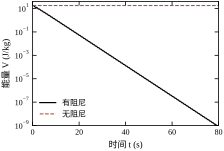
这就是 Lyapunov 方法的核心思想：不去解方程，而是找一个沿轨迹单调下降的标量函数。 找到了，稳定性就得到证明；找不到，什么也不能说明。前者是充分条件，后者不是否定——这个不对称是本章所有保守性问题的根源。
工程口语里的“稳定”至少混着三个不同的意思，必须分开。
第一种是稳定（Lyapunov 意义）：初值足够靠近平衡点，轨迹就永远不跑远。它只要求有界，不要求收敛。无阻尼单摆属于这一类：能量守恒，摆幅不变，但不会发散。
第二种是渐近稳定：不仅不跑远，还最终回到平衡点。有阻尼单摆属于这一类。注意“最终”没有时间表，理论上可以是无穷慢。
第三种是指数稳定：存在常数 a>0 与 M，使 \|x(t)\|\le M\|x(0)\|e^{-at}。它给出了明确的收敛速率，控制器设计真正需要的是这一档。
三者层层加强，差别在实际系统中非常具体。考虑 x'=-x^{3}：V=x^{2} 的导数是 -2x^{4}，负定，所以原点全局渐近稳定。但脚本算出，从 1 降到 0.1 需要 49.5 s，从 0.1 再降到 0.01 需要 4950 s——每多一位精度，时间乘一百。作为对照，线性系统 x'=-x 从 1 到 0.1 只要 2.303 s。前者是代数收敛，后者是指数收敛，两者都能叫“渐近稳定”，工程含义却天差地别。
三个概念是严格的包含关系：指数稳定必渐近稳定，渐近稳定必稳定，反过来都不成立。稳定但不渐近的例子是无阻尼单摆，能量守恒，轨迹在一个闭轨上绕圈，永远不回原点。渐近但不指数的例子就是上面的 x'=-x^{3}，收敛但越来越慢，没有任何一个正数 a 能让 \|x\|e^{at} 保持有界。
把这三个词对应到工程指标，关系会更清楚。“稳定”对应“不发散”，是最低要求，振动台、悬浮系统都至少要满足它。“渐近稳定”对应“能回到设定值”，位置伺服、恒温控制需要它。“指数稳定”对应“有确定的调节时间”，凡是要写进技术协议的响应指标，背后都隐含这一档。协议里写“阶跃响应 2 s 内进入 \pm2\%”，翻译过来就是“衰减率不小于某个值”，而衰减率只对指数稳定有定义。
这也解释了一个常见的沟通错位。控制工程师说“系统稳定”，客户理解成“会回到设定值”，实际可能只是“不会散架”。把稳定性等级写清楚，比争论“稳不稳定”有用得多。
对线性系统 \dot x=Ax，二次型 V=x^{\mathsf T}Px 是最自然的候选。求导得 \dot V=x^{\mathsf T}(A^{\mathsf T}P+PA)x。若能让括号里的矩阵等于某个负定矩阵 -Q，就有 \dot V=-x^{\mathsf T}Qx<0。
于是“找一个正定矩阵 P 使 A^{\mathsf T}P+PA 负定”变成了一道线性方程：
A^{\mathsf T}P+PA=-Q \tag{52-4}
给定任意正定 Q，解出 P，再检查 P 是否正定。这个方程叫 Lyapunov 方程，它是本章唯一需要真正求解的数学对象，也是第 51 章 Gramian 的一般形式——把 Q 取成 BB^{\mathsf T} 或 C^{\mathsf T}C，解出来的就是能控、能观 Gramian。
以本章的质量-弹簧-阻尼对象（m=1、k=4、c=0.4）为例，取 Q=I 解得
P=\begin{bmatrix}6.3&0.125\\0.125&1.5625\end{bmatrix} \tag{52-5}
特征值 1.559 与 6.303，都为正，条件数 4.04；代回方程的相对残差 1.8\times10^{-15}，与直接用 Kronecker 展开求解的结果相差 9.2\times10^{-16}。这组数字说明：对小规模、良态的系统，Lyapunov 方程可以解得很干净。
§52.2 给出定义与三个基本定理，包括 LaSalle 不变原理；§52.3 把它固化成一套可执行步骤；§52.4 与 §52.5 分别在连续域与离散域把流程走一遍；§52.6 讨论稳定性与性能的关系——收敛速率界有多保守，为什么保守；§52.7 分析 Q 与 P 的参数意义；§52.8 给出调参经验；§52.9 讲改进手段，包括区域估计与基于优化的构造；§52.10 是工程落地；§52.11 说明这套方法的边界；§52.12 是全部代码。
读本章要始终记住一件事：Lyapunov 方法证明的是“充分”，不是“必要”。 一个系统稳定，未必存在你手上这个形式的 V；找不到 V 不等于不稳定。所有工程判断都必须带着这句限定。
把单摆的例子换成一个更贴近现场的版本：一台吊车把重物吊到空中，重物相当于一个挂在钢丝绳下的摆。操作员关心的问题有三个，恰好对应本章的三层内容。
第一个问题是“会不会荡起来收不住”。这是稳定性问题，答案是“有阻尼就不会”，但前提是摆角不超过某个范围。超出范围之后，重物可能绕卷筒转圈，钢丝绳缠绕，事故就此发生。稳定性分析要给出的是这个“前提”，而不是一句“稳定”。
第二个问题是“多大的扰动才会出事”。这是吸引域问题。脚本给的数字很具体：0.95 倍分界能量对应的初值是 (2.691,0)，能回来；1.05 倍对应 (3.0,1.469)，回不来。两者之间只差 5\% 的能量，命运完全不同。工程上把这个边界写成操作规程：起吊角不得超过某个度数，风速超过某个值就停止作业。
第三个问题是“出事先有没有预警”。这是在线监测问题。把 V 算在控制器里，当 V 连续上升并逼近边界时报警，操作员还有时间降速或反向纠正。这一步不需要任何新理论，只需要在控制器里算一次二次型（§52.10.5）。
三个问题层层递进，但都建立在同一个函数上。这也是本章值得花篇幅的原因：一个 V 同时回答了“稳不稳、范围多大、离边界多远”，而极点判据只能回答第一个，而且还只在工作点附近有效。
工业现场还有一层复杂性：参数会漂移。钢丝绳的等效长度随卷扬变化，阻尼随润滑状态变化，负载质量随货物变化。V 的等值面要跟着这些参数走，§52.3.2 讲的“平衡点平移”与这里的“等值面随参数平移”是同一类问题。做法是每隔一段时间用当前参数重算一次 P，或者用一个参数化的 V 覆盖整个工作范围——后者更稳，但构造难度大得多。
本节把“稳定”从直觉变成可以逐条核对的定义与定理。读的时候请留意每个定理的前提：Lyapunov 方法的几乎所有误用，都来自前提被悄悄放宽。
考虑自治系统 \dot x=f(x)，f(0)=0，即原点是一个平衡点。
稳定：对任意 \varepsilon>0，存在 \delta>0，使得只要 \|x(0)\|<\delta，就有对一切 t\ge0 成立 \|x(t)\|<\varepsilon。
\forall\varepsilon>0,\ \exists\delta>0:\ \|x(0)\|<\delta\ \Rightarrow\ \sup_{t\ge0}\|x(t)\|<\varepsilon \tag{52-6}
这个定义里没有“收敛”，只有“不越界”。\delta 一般依赖 \varepsilon，也可能依赖初始时刻（非自治系统）。自治系统里 \delta 只依赖 \varepsilon，因此叫一致稳定。
渐近稳定：稳定，且存在 \delta_0>0，使 \|x(0)\|<\delta_0 时 \lim_{t\to\infty}x(t)=0。收敛可以任意慢，定义不提供速率。
指数稳定：存在 M\ge1、a>0，使
\|x(t)\|\le M\|x(0)\|e^{-at} \tag{52-7}
指数稳定蕴含渐近稳定，反之不成立。§52.1.3 的 x'=-x^{3} 就是反例：它渐近稳定，但从 1 到 0.1 要 49.5 s、从 0.1 到 0.01 要 4950 s，找不到一对固定的 (M,a) 覆盖所有初值。
全局与局部是另一条轴，与上面三种正交。全局指 \delta 可以取到无穷（或 \delta_0=\infty），局部只在一个邻域内成立。单摆的结论是局部的：吸引域由分界能量 2g/l=19.62 J/kg 圈定，出了这个圈就再也回不来。
设 V:\mathbb{R}^{n}\to\mathbb{R} 连续可微，V(0)=0。若存在正定函数 \alpha 使 V(x)\ge\alpha(\|x\|)，称 V 正定；若还有 \lim_{\|x\|\to\infty}V(x)=\infty，称 V 径向无界。
V(x)>0\ (x\neq0),\qquad \lim_{\|x\|\to\infty}V(x)=\infty \tag{52-8}
两个条件各管一件事。正定性保证 V 的等值面 \{V=c\} 把原点包在里面，V 下降就意味着轨迹向里走；径向无界保证这些等值面不“开口”，V 有界就推出 \|x\| 有界。
单摆的能量函数在 \mathbb{R}^{2} 上正定，但因为 \cos 的周期性，它不径向无界：
V=\tfrac12x_2^{2}+9.81\left(1-\cos x_1\right) \tag{52-9}
沿 x_2 方向它确实趋于无穷，沿 x_1 方向却周期往复。后果是：V 有界只能推出角速度有界，推不出角度有界——摆可以一直转。这正是“全局结论需要径向无界”的具体体现，也是 §52.1.1 中初值 1.05 倍分界能量那条轨迹的数学解释。
定理（Lyapunov 直接法） 设 D 是包含原点的开集，V:D\to\mathbb{R} 连续可微且正定。沿系统轨迹计算 \dot V。
若在 D 内 \dot V\le0，则原点稳定；若在 D\setminus\{0\} 内 \dot V<0，则原点渐近稳定；若进一步存在常数 c_1,c_2,c_3>0 使
c_1\|x\|^{2}\le V(x)\le c_2\|x\|^{2},\qquad \dot V(x)\le-c_3\|x\|^{2} \tag{52-10}
则原点指数稳定。若 D=\mathbb{R}^{n} 且 V 径向无界，结论升级为全局。
三个条件的分工要看清。\dot V\le0 只给稳定，这是最容易漏的一步：不少设计文档写了“\dot V\le0，故渐近稳定”，中间缺了 LaSalle 或严格负定这一环。\dot V<0 给渐近，但速率不做保证。只有式 (52-10) 那种二次型夹逼才给出指数速率。
式 (52-10) 里的三个常数不是装饰。把第一式代入第三式，可以消去 \|x\|^{2}，得到
V(x(t))\le V(x(0))\,e^{-(c_3/c_2)t} \tag{52-11}
再由 c_1\|x\|^{2}\le V 得 \|x(t)\|\le\sqrt{c_2/c_1}\,\|x(0)\|e^{-c_3/(2c_2)\,t}。也就是说，指数速率的下界是 c_3/(2c_2)，初值的放大倍数是 \sqrt{c_2/c_1}。这两个数都可以从 P、Q 直接读出：c_1=\lambda_{\min}(P)、c_2=\lambda_{\max}(P)、c_3=\lambda_{\min}(Q)。
很多系统的 \dot V 只是半负定：\dot V\le0，但在某些方向上恰好为零。机械系统的阻尼项 -b x_2^{2} 就是典型——速度为零时它等于零，不管位置在哪里。
这时不能直接断言渐近稳定，因为轨迹可能停在 \dot V=0 的某个点上不动。LaSalle 给出了正确的补充条件。
定理（LaSalle） 设 \Omega 是紧的正不变集，V 在 \Omega 上连续可微且 \dot V\le0。令 E=\{x\in\Omega:\dot V(x)=0\}，M 是 E 中最大的不变集，则当 t\to\infty 时，每条从 \Omega 出发的轨迹都趋于 M。
E=\{x\in\Omega:\dot V(x)=0\},\qquad x(t)\to M\subseteq E \tag{52-12}
对单摆，\dot V=-b x_2^{2}，所以 E 是整条 x_2=0 的轴。E 里哪些点能停留？在 x_2=0 上，\dot x_1=0、\dot x_2=-9.81\sin x_1，只有 x_1=0 或 x_1=\pm\pi 才不动。所以在 |x_1|<\pi 内，M 只有原点，轨迹必然收敛到原点。
这条推理给出一个可计算的区域：只要水平集 \{V\le c\} 不包含 x_1=\pm\pi，结论就成立。x_1=\pi 处的能量是 2g/l=19.62，所以 c 必须严格小于它。脚本按 0.01 的步长取到 c=19.61，对应的角度上界逼近 \pi。
线性系统有一个漂亮的逆定理：A 的所有特征值实部为负，当且仅当对任意正定 Q，方程 (52-4) 有唯一正定解 P。这条“当且仅当”让线性情形没有保守性——稳定性与二次型 Lyapunov 函数的存在性完全等价。
非线性系统没有这么好的性质。质量-弹簧-阻尼对象加上一个立方项，得到
\ddot x+0.4\dot x+x-0.2x^{3}=0 \tag{52-13}
取 V=\tfrac12(x_1^{2}+x_2^{2})，则 \dot V=-0.4x_2^{2}+0.2x_1^{3}x_2。脚本在三个半径上检查这个二次型：c=0.1 的圆上 \max\dot V=+1.98\times10^{-4}，c=0.5 时 +0.0216，c=1.0 时 +0.1363。每一条圆上都有 \dot V>0 的点，所以这个二次型在任何水平集上都不是 Lyapunov 函数。
但同一组数字显示，从 (0.8,0)、(1.2,0)、(1.6,0) 出发的轨迹都收敛到原点，末态模长在 10^{-6} 量级。也就是说，系统在原点附近是稳定的，二次型却给不出证书。 这不是数值错误，而是 Lyapunov 方法的固有局限：它对 V 的形式敏感，选错了形式就什么也证不出来。
这一节要带走两句：线性情形下“找不到 P”等价于不稳定；非线性情形下“找不到 V”什么也不说明。
离散系统 x_{k+1}=f(x_k) 的定理形式几乎一样，只把导数换成差分：
\Delta V(x_k)=V(x_{k+1})-V(x_k) \tag{52-14}
\Delta V\le0 给稳定，\Delta V<0 给渐近稳定；若 c_1\|x\|^{2}\le V\le c_2\|x\|^{2} 且 \Delta V\le-c_3\|x\|^{2}，则每步至少缩小一个固定比例，即 \|x_k\|\le\sqrt{c_2/c_1}\,\|x_0\|\,(1-c_3/c_2)^{k/2}。
对线性系统 x_{k+1}=A_dx_k，取 V=x^{\mathsf T}Px，条件变成
A_d^{\mathsf T}PA_d-P=-Q \tag{52-15}
这是离散 Lyapunov 方程。它的可解性与连续情形平行：A_d 的全部特征值模小于 1，当且仅当对任意正定 Q 存在唯一正定解 P。
两个版本有一处实质差别容易被忽略。连续域的“稳定边界”是虚轴，极点在边界上时方程奇异、P 发散；离散域的边界是单位圆，|z|=1 时同样奇异。而两者的“距离感”不同：连续域里极点从 -0.01 挪到 -0.001，稳定裕度缩小十倍；离散域里 z 从 0.99 挪到 0.999，P 的元素放大约一百倍。§52.5 会用 T_s=0.05 s 的电机算例给出具体数字：|z|=0.99005，P 的最大元素 126.5，比连续域的 6.3 大了二十倍，原因只是采样周期把时间尺度压缩了。
定理本身不复杂，错都错在细节。以下四条在审稿与现场检查里出现频率最高。
第一，把 \dot V\le0 直接当成渐近稳定。 半负定只给稳定。要补 LaSalle，或者把 Q 换成使 \dot V 严格负定的形式（例如对机械系统取 Q 含位置项）。单摆就是典型：\dot V=-0.3x_2^{2} 在整条 x_2=0 上为零，若不补 LaSalle，只能得到“摆不会越摆越大”。
第二，忘了径向无界。 局部结论与全局结论的差别全在这一个条件上。单摆能量沿角度方向周期，不是径向无界，因此无论仿真跑多久、初值多小，都不能宣称全局渐近稳定；真正的全局结论要求把角度限制在 (-\pi,\pi) 的开区间内，或者换一个周期性处理的状态坐标。
第三，把 V 当成物理能量。 Lyapunov 函数不唯一：P 解出来之后，任意正定矩阵 R 都能构造 P'=P+R 对应的新函数，结论不变。所以 V 的数值大小没有物理意义，只有它的等值面形状与导数符号有意义。把 V 的单位写成焦耳、再拿去做能量预算，是常见但无害的误用；有害的是反过来——因为“能量不守恒”就否定 V。
第四，平衡点没平移到原点。 定理要求 f(0)=0。若实际平衡点是 x_\star\neq0，必须先令 e=x-x_\star，在 e 坐标下写方程，再用 V(e)。省这一步，\dot V 里会多出常数项，符号判断全错。第 42 章的稳态误差分析里，工作点偏移的处理与此是同一件事。
定理不必背，但证明的骨架要清楚，否则用的时候就不知道哪一步在依赖什么。三个定理的证明各有一个关键动作。
稳定性的关键是“水平集装得进 \varepsilon 球”。V 正定且连续，所以存在 c>0，使 \{V\le c\} 整个落在 \|x\|<\varepsilon 里。初值若在这个水平集内，\dot V\le0 保证 V 不增，于是轨迹永远出不去。整个过程只用了一次单调性，一次连续性。这里的“\delta”就是水平集的内接球半径。
渐近稳定性的关键是“排除停在非零水平集上”。若 \dot V 负定，可直接反证：V 单调有下界，故收敛到某个 V_\infty；若 V_\infty>0，轨迹被限制在紧集内，\omega 极限集非空，而在这个集合上必须有 \dot V=0；但 \dot V<0 除原点外处处成立，矛盾。若 \dot V 只是半负定，这一步不成立，需要 LaSalle 把“\dot V=0 的点”进一步排除——单摆就是靠“x_2=0 上只有 x_1=0,\pm\pi 能停住”补上这一刀。
指数稳定性的关键是“三明治不等式”。要同时有 c_1\|x\|^{2}\le V(t,x)\le c_2\|x\|^{2} 与 \dot V\le-c_3\|x\|^{2}，也就是式 (52-8) 的正定性条件加上一个带余量的导数条件。
下界把 V 小翻译成 \|x\| 小，上界把 \|x\| 大翻译成 V 大，两者缺一不可。有了三明治，\dot V\le-(c_3/c_2)V，用 Grönwall 不等式得 V(t)\le V(0)e^{-c_3t/c_2}，再开方就得到式 (52-28) 的界。
只给上界不给下界是初学者最常犯的证明错误。上界只能说明“V 有界”，而下界才说明“V 有界意味着状态有界”。若 V 在某个方向上恒为零（半正定），下界不成立，结论也就断了。
本章全程假设 f 不显含时间。真实系统里，参数会随温度漂移，负载会变，参考值会走，f 往往是 f(t,x)。
时变情形下 V 也要写成 V(t,x)，且必须“一致正定”：存在与 t 无关的 c_1、c_2 使三明治成立。只要求“对每个 t 都正定”是不够的——可能出现 V 在每个时刻都正定、但下界随 t 趋于零的情况，此时收敛性无法保证。
更关键的一条：时变系统里 \dot V\le0 不再够用。因为在某个时刻 \dot V=0，系统可能“停下来歇一会”，而 f 随时间变化之后又会把它推走。常见的补丁是 Barbalat 引理：若 V 有下界、\dot V\le0 且 \dot V 一致连续，则 \dot V\to0。它不能给出速率，但能给出“最终不再消耗 V”这一结论，自适应控制里几乎每次都要用它。
本章不展开时变理论，只提醒一件事：把自治情形的结论直接搬到自适应或参数时变系统上，是审稿意见里出现频率很高的一类问题。看到“参数缓慢变化”这句话，就应当问“多慢算慢、有没有一致界”。
二阶以上的例子总要借助工具，一维系统则可以把每一步都写清楚。它小到能一眼看完，却包含了本章所有关键动作。
考虑 \dot x=-x+x^{3}。这个系统的平衡点有三个：x=0 与 x=\pm1。线性化给出 f'(x)=-1+3x^{2}，在原点处是 -1，稳定；在 \pm1 处是 2，不稳定。所以原点局部渐近稳定，\pm1 是两个不稳定平衡点，它们把状态轴分成三段。
取 V=x^{2}/2，\dot V=x\dot x=-x^{2}+x^{4}=x^{2}(x^{2}-1)。在 |x|<1 内 \dot V<0，在 |x|>1 内 \dot V>0。于是水平集 \{V\le c\} 能用当且仅当 \sqrt{2c}<1，即 c<1/2。这个上界对应的正是“不越过 \pm1”这一条件，与平衡点的位置完全吻合。
脚本给出四个初值的结果：0.5 收敛到 0，0.9 收敛到 0，1.1 跑到 9.633870，2 跑到 19.583766。网格搜索找到的最大可用水平是 c=0.49，解析值是 0.5，差的那一点来自网格离散步长。
这个例子把三件事一次讲完。第一，V 的可用范围由 \dot V 的符号决定，不由 V 自己决定；本例中 V 处处正定、处处径向无界，但可用的水平集只到 0.5。第二，范围边界往往对应另一个平衡点，\pm1 就是边界；判断边界在哪里，等价于解 f(x)=0。第三，初值一旦越过边界，不是“收敛慢一点”，而是彻底发散，1.1 与 0.9 只差 0.2，结局一个是 0，一个是 9.6。
用线性化能不能得到这些结论？只能得到第一条：原点稳定，\pm1 不稳定。它说不出 0.5 这个范围，也说不出越过之后会跑到哪里。这就是 §52.1.1 那句“线性判据回答局部问题”的最简版本。
一维系统还有一个好处：可以把 \dot V 的符号画成一条数轴上的箭头，|x|<1 指向原点，|x|>1 指向外侧。二维系统的相图是这条数轴的推广，三维以上就画不出来了，只能靠 V 的等值面想象。所以每次遇到高维问题，先在一维或二维找一个能完全看懂的类比，是很有用的习惯。
式 (52-4) 是一个线性方程，但它未必可解，更未必唯一。把这件事说清楚，后面所有“解出来就完事”的操作才有依据。
先把方程拉直。按列优先把 P 拉成向量 \mathrm{vec}(P)，式 (52-4) 就变成 L\,\mathrm{vec}(P)=-\mathrm{vec}(Q)，其中 L 的构造见 §52.4.4 的式 (52-19)。L 是 n^{2}\times n^{2} 的矩阵，称为 Lyapunov 算子，它的特征值有闭式：若 A 的特征值是 \lambda_1,\dots,\lambda_n，则 L 的特征值恰为所有两两之和 \lambda_i+\lambda_j。
有了谱，可解性就清楚了：L 可逆当且仅当不存在一对特征值满足 \lambda_i+\lambda_j=0。对稳定系统，所有特征值的实部为负，任意两个之和的实部也必然为负，永远不可能等于零。所以只要 A 是 Hurwitz 的，方程对任意 Q 都有唯一解。§52.4.4 会用本章对象验证一次：极点 -0.2\pm1.989975\mathrm{j} 给出的四个和正是 -0.4、-0.4、-0.4\pm3.97995\mathrm{j}，与脚本输出逐位一致。
唯一性还有一个直接推论：若 Q 对称，则解 P 也对称。理由是转置方程后，P^{\mathsf T} 同样满足方程，而解唯一，故 P=P^{\mathsf T}。这条推论省掉了一半的计算量，也解释了为什么求解器只返回一个对称矩阵。
反过来看不可解的情形，能帮助理解“临界”是什么意思。取 A=\mathrm{diag}(1,-1)，方程的三个分量是 2p_{11}=-q_{11}、-2p_{22}=-q_{22}、0=-q_{12}。前两个可解，第三个要求 q_{12}=0；即便满足，p_{12} 也完全自由。这就是“特征值关于虚轴对称”带来的退化：系统既不收敛也不发散，P 描述的“能量”不再唯一。
本章对象在 c=0 时正是这种情形，极点落在 \pm2\mathrm{j} 上，脚本解出的 P 元素达到 9.007\times10^{15}。这个数不是“很大的能量”，而是“方程接近奇异、解在数值上失控”的信号。它提醒一件事：P 的元素大小本身没有物理意义，只有与 Q 一起看才有意义。
最后给出解的积分表示，它在后面几节反复用到：
P=\int_0^{\infty}e^{A^{\mathsf T}t}Qe^{At}\,\mathrm{d}t .
直接对右端求导即可验证它满足方程，而收敛性由 A 的 Hurwitz 性保证。这个式子把 P 解释成“沿轨迹累积的代价”，也解释了为什么 P 主要由慢模态决定——快模态的指数因子衰减得快，对积分的贡献小。
把前面两节的定理落成一次可复现的分析，只需要七步。图 52-11 把它们画成一条带分支的流程：前三步是“准备”，中间两步是“求解与验算”，最后两步是“下结论”。
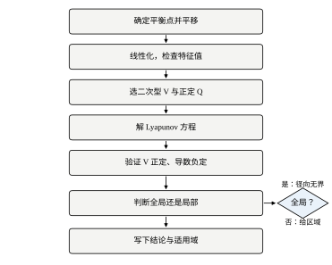
七步依次是：确定平衡点并平移到原点、线性化并检查特征值、选二次型 V 与正定 Q、解 Lyapunov 方程、验证 V 正定与 \dot V 负定、判断结论是全局还是局部、写下结论与适用域。
这个顺序不能颠倒。工程上最常见的失败不是算错，而是跳过第一步直接解方程，得到的 P 对应的是“某个假想的原点”，与真实工作点差一个常值偏移，于是 \dot V 里多出一阶项，符号判断整个作废。
每一步都要留下可检查的产物，而不是只在脑子里过一遍：第一步留下平移后的方程，第二步留下特征值表，第三步留下 Q 与理由，第四步留下 P 与残差，第五步留下 \lambda(P) 的最小值，第六步留下水平集上界 c，第七步留下一句能写进报告的结论。有产物，别人才复核得了。
定理要求 f(0)=0。实际系统给出的平衡点往往不是原点：带负载转矩的电机，稳态电流不为零；带重力的竖直运动对象，稳态位置偏离几何中点；有常值扰动的回路，积分器输出停在一个非零值上。
做法是先解 f(x_\star)=0，再令 e=x-x_\star，把方程写成 \dot e=\tilde f(e)，此时 \tilde f(0)=0。V 与 Q 都定义在 e 上，而不是 x 上。
这一步在控制器里对应前馈项：把 x_\star 算出来并叠加到控制量上，剩下的反馈只负责压 e。第 42 章讨论稳态误差时，工作点偏移的处理与此完全一致——那里是让积分器承担平移，这里是让坐标变换承担平移。
若平衡点随工况缓慢漂移，V 的等值面也要跟着平移。此时更稳妥的写法是把 V 写成 V(x-x_\star(t))，并在 \dot V 中保留 \dot x_\star 项；否则会把“跟踪误差收敛”误判成“状态收敛”。
在平移后的原点上求 Jacobian A=\partial\tilde f/\partial e，算特征值，按实部符号分三支。
第一支，全部实部为负。此时原点局部渐近稳定，且由逆定理，线性化方程的 P 一定存在且正定，可以作为局部的 Lyapunov 函数。对本章的质量-弹簧-阻尼对象（k=4、c=0.4、m=1），极点是 -0.2\pm1.989975\mathrm{j}，实部离虚轴只有 0.2，属于“稳定但不算宽裕”。
第二支，存在实部为正的特征值。原点不稳定，二次型路线到此为止。此时要么改控制器（第 54 章的状态反馈），要么分析别的平衡点。
第三支，实部恰好为零。这是最容易被误判的一支，线性化给不出结论，而且 Lyapunov 方程本身会奇异。取一个无阻尼振子，极点为 \pm1\mathrm{j}，脚本解出的 P 元素达到 9.007\times10^{15}，Lyapunov 算子的奇异值是 [2,2,0,0]——两个零奇异值直接说明方程不可解。此时只能回到非线性方程，用 LaSalle 或构造非二次 V，不能靠“把求解器容差调大”蒙混过去。
Q 的选择没有唯一答案，但有一个合理的默认值：Q=I。它对应的 \dot V=-\|e\|^{2}，含义是“所有状态方向的误差同权”。脚本对这个对象算出收敛率界 \alpha=\lambda_{\min}(Q)/(2\lambda_{\max}(P))=0.079324。
Q 的整体缩放不影响结论。取 Q=0.01I，解出的 P 同比例缩小，\alpha 仍是 0.079324。所以不要指望“把 Q 调大”能换来更紧的界，它只是把 V 的数值放大。
真正改变界的是 Q 的方向权重。对同一个对象，取 Q=\mathrm{diag}(10,1) 时 \alpha=0.027603，取 Q=\mathrm{diag}(1,10) 时 \alpha=0.009747，都比各向同性的 0.079324 小。原因是加权把 V 的等值面拉长，最坏方向上的衰减被低估。这个例子说明：在没想清楚之前，Q=I 往往给出最不保守的界；一旦按物理量纲加权，界会变松，需要重新评估。
还有一个更隐蔽的坑：取 Q=C^{\mathsf T}C（输出只有位置）时，\alpha=0。方程仍可解、P 仍正定，因为系统能观；但 \lambda_{\min}(Q)=0，速率界退化为零。加上 10^{-3}I 后 \alpha=0.000379，仍然比 Q=I 小两个数量级。看到 \alpha 突然掉到零，先查 Q 是不是半正定而非正定。
解出 P 之后必须验算残差，而不是看求解器有没有报错：
r=\frac{\left\|A^{\mathsf T}P+PA+Q\right\|_{F}}{\left\|Q\right\|_{F}} \tag{52-16}
本章算例的 r=1.783\times10^{-15}，用 Kronecker 展开独立求解得到的 P 与之相差 9.223\times10^{-16}，两种解法互相印证。判据可以定得简单些：双精度下 r<10^{-10} 视为通过；超过这个量级，先怀疑 Q 不对称、A 接近临界，而不是怀疑数学推导。
顺带记录两个条件数。P 的条件数是 4.0426，Lyapunov 算子的条件数是 32.0489。后者约为前者的八倍，符合“算子条件数随维数平方增长”的经验。条件数大意味着 P 对 A 的微小误差敏感，报告里应当写出来，否则别人复现时会得到差别很大的 P。
先看 \lambda(P)。本章算例的两个特征值是 1.559204 与 6.303296，都为正，V 正定成立。若出现零或负特征值，不要急着判“系统不稳定”——先确认 Q 是否真的正定、A 是否真的稳定，因为数值误差可能把 10^{-16} 量级的特征值变成负数。
再判断结论的适用范围。二次型 V=e^{\mathsf T}Pe 天然径向无界，所以限制只可能来自 \dot V 的符号：线性系统里 \dot V=-e^{\mathsf T}Qe 全局成立，结论就是全局指数稳定；非线性系统里 \dot V<0 通常只在某个水平集内成立，结论只能是局部的，并且必须给出这个水平集的上界。
单摆就是后一种。\dot V=-0.3x_2^{2}\le0，靠 LaSalle 补上渐近性，而水平集不能碰到 x_1=\pm\pi，于是 c<2g/l=19.62。脚本按 0.01 步长取到 c=19.61，这是一个可以直接写进报告的适用域。
结论建议写成三句话，缺一句都算没写完：
第一句交代平衡点与坐标，例如“在 \theta=0、以 (\theta,\dot\theta) 为状态、平衡点已平移到原点”。
第二句交代稳定性等级与依据，例如“原点局部渐近稳定；取 Q=I 解得 P，残差 1.8\times10^{-15}，\dot V=-x_2^{2}\cdot0.3\le0，由 LaSalle 不变原理得渐近性”。
第三句交代适用域，例如“结论在 V\le19.61 内成立，超出后摆可能越顶”。
七步里任何一步都可能卡住。表 52-1 把常见症状、原因与处理列在一起，按“先查便宜的、再查昂贵的”排序。
| 症状 | 原因 | 处理 |
|---|---|---|
| P 有非正特征值 | A 不稳定，或 Q 非正定 | 回第二步查特征值；确认 Q 对称正定 |
| 残差 r>10^{-10} | 方程接近奇异，或 A 有实部近零的极点 | 查 \min|\mathrm{Re}\,\lambda|；改用高精度或解析解 |
| \mathrm{cond}(P) 随参数线性膨胀 | 参数贴近稳定边界 | 报告条件数；结论标注“对该参数敏感” |
| \alpha 远小于实测衰减率 | 二次型与真实不变集形状不匹配 | 界本身合法，可接受；需更紧则换 Q 或换 V |
| 任意半径上都有 \dot V>0，但仿真收敛 | 二次型不适配 | 换非二次 V（§52.9），不要用仿真替代证明 |
| 线性化极点在虚轴上 | 临界情形，方程奇异 | 放弃二次型，直接做非线性分析 |
表中第三行需要展开。脚本取扰动 \epsilon 从 10^{-1} 降到 10^{-4}，P 的元素从 5 涨到 5000，\mathrm{cond}(P) 与 \mathrm{cond}(L) 都从 10 涨到 10^{4}，而残差始终是零。残差为零不代表结论可靠，它只说明方程解对了；结论的可信度由条件数决定。这是数值线性代数里“后向稳定不等于前向准确”的经典区别，在 Lyapunov 分析里尤其容易踩。
表中第五行对应 §52.2.5 的三次项反例：三个半径上 \max\dot V 分别是 +1.98\times10^{-4}、+0.0216、+0.1363，二次型给不出任何证书，但轨迹确实收敛。这时正确的做法是承认“二次型失败”，然后换函数，而不是把仿真曲线当成证明。
最后一条经验：不要用仿真的收敛去反推稳定性。仿真是有限时间、有限初值、有限精度的抽样，它只能证伪，不能证明。Lyapunov 分析的价值恰恰在于它给出的是对所有初值（或明确划定的初值集合）都成立的结论。
流程讲完，走一遍完整算例。对象仍是 k=4、c=0.4、m=1 的质量-弹簧-阻尼系统，目标是给出一份可以直接贴进报告的结论。
第一步，写方程。\ddot x+0.4\dot x+4x=0，平衡点在 x=0、\dot x=0，已经是原点，不需要平移。这一步的产物是状态方程，见 §52.4.1 的式 (52-17)。
第二步，线性化。系统本来就是线性的，A 就是状态方程的系数矩阵。特征方程 s^{2}+0.4s+4=0，两个根 -0.2\pm1.989975\mathrm{j}，实部为负，属于“局部渐近稳定”那一支，可以进入第三步。产物是一行特征值。
第三步，选 Q。取 Q=I，理由是两个状态的量纲接近（位移与速度都是国际单位），不需要额外加权。产物是一句“Q=I，量纲相当”。
第四步，解方程。把 A 与 Q 代入，得到 P=\begin{bmatrix}6.3&0.125\\0.125&1.5625\end{bmatrix}，残差 1.783\times10^{-15}，与 Kronecker 解法的差 9.223\times10^{-16}。产物是 P 与两个残差。
第五步，验证正定。\lambda(P)=1.559204 与 6.303296，都大于零，V 正定。\mathrm{cond}(P)=4.0426，属于健康范围。产物是两个特征值与条件数。
第六步，判断范围。线性系统里 \dot V=-x^{\mathsf T}x 对一切 x 成立，V 又径向无界，所以结论是全局的，不需要给水平集上界。产物是一句“全局成立”。
第七步，写结论。三句话：平衡点在原点，状态取位移与速度；原点全局指数稳定，取 Q=I 解得 P，\dot V=-\|x\|^{2}，衰减率不小于 \alpha=\lambda_{\min}(Q)/(2\lambda_{\max}(P))=0.079324；结论对全部初值成立，界相对实测保守 2.52 倍。
这七步在纸上不超过一页，计算量只有一次二阶方程求解。换成三阶、五阶，步骤完全一样，只是解方程要用工具。流程的价值在于它把“我算了一下，应该稳定”变成“每一步都有产物，别人可以逐条复核”。
再走一遍非线性版本，看看差别在哪。对象换成单摆，第一步要确认平衡点 (0,0)；第二步线性化得到极点 -0.15\pm3.13\mathrm{j}，实部为负；第三步不能用 Lyapunov 方程，改用物理能量 V=\tfrac12x_2^{2}+9.81(1-\cos x_1)；第四步没有方程可解，直接求导得 \dot V=-0.3x_2^{2}；第五步验证 V 在 |x_1|<\pi 内正定；第六步发现 \dot V 只是半负定，需要 LaSalle，且水平集不能碰 \pm\pi，于是 c<19.62；第七步的结论必须带适用域，“V\le19.61 内渐近稳定”。
两相对照，前两步一样，第三到第五步的方法完全不同，第六步的差别最大：线性情形不需要讨论水平集，非线性情形不讨论水平集就等于没做完。这也解释了为什么本章要把 §52.2 的定理前提写得那么细——到了第六步，前提就是结论的一部分。
一份 Lyapunov 分析交上去，复核者通常会按顺序问五个问题。提前准备好答案，比事后补算省事得多。
第一个问题：“平衡点是什么，为什么要平移到原点？”答案要具体到坐标与工况，不能只说“原点”。带负载的电机，稳态电流不是零；带重力的升降机构，稳态位置不在几何中点。回答时给出 x_\star 的表达式，并说明平移后 f(0)=0 是怎么验证的。
第二个问题：“Q 为什么这么选？”最差的回答是“惯例”。好的回答是“两个状态量纲相当，取 I；若按物理量加权，\alpha 会从 0.079324 降到 0.027603，界更松”。这个回答同时说明了选择理由与代价。
第三个问题：“残差多少，怎么验证解对了？”答案要给出残差的定义式与数值，最好再给出交叉验证的结果。只说“求解器没报错”是不合格的，因为 §52.10.2 那个转置错误就不会报错。
第四个问题：“结论是全局还是局部？局部的话边界在哪？”线性系统可以直接说全局；非线性系统必须给出 c 的值与它的来源。若说不出 c，说明水平集分析没做。
第五个问题：“条件数多少？参数变化会不会翻转结论？”这一问针对鲁棒性。\mathrm{cond}(P)=4.0426 说明结论稳健；若条件数是 10^{6}，就要补一段敏感性分析，说明在什么参数范围内结论仍然成立。
五个问题对应本章的五个关键动作：平移、选 Q、验残差、定范围、报条件数。把这五件事写进一页纸，评审基本不会再追问。反过来，任何一件缺失，都会被要求补充——而且往往是在项目节点前一周。
用同一个单自由度对象贯穿全章：质量 m=1 kg、刚度 k=4 N/m、阻尼 c=0.4 N·s/m，位移记 x_1、速度记 x_2。状态方程是
\dot x=\begin{bmatrix}0&1\\-4&-0.4\end{bmatrix}x \tag{52-17}
无阻尼时固有频率是 \omega_n=\sqrt{k/m}=2 rad/s，阻尼比 \zeta=c/(2\sqrt{km})=0.1，属于欠阻尼。极点是 -0.2\pm1.989975\mathrm{j}，实部 -0.2 对应时间常数 5 s，也就是包络衰减到 e^{-1} 要 5 s。
选这个对象有两个理由。它的极点可以解析写出，任何数值结果都能用手算核对；它的阻尼可以在 0 到 8 之间连续调，能一次看到“临界—欠阻尼—临界阻尼—过阻尼”四种情形，而 Lyapunov 方程的可解性、条件数、收敛率界在这四种情形里的表现差别很大。
把 c 依次取 0、0.4、2、4、8，得到表 52-2。阻尼比依次是 0、0.1、0.5、1、2。
| 阻尼 c | 阻尼比 \zeta | 极点 | Lyapunov 方程 |
|---|---|---|---|
| 0 | 0 | \pm2\mathrm{j} | 奇异，P 发散 |
| 0.4 | 0.1 | -0.2\pm1.989975\mathrm{j} | 可解，\mathrm{cond}(P)=4.0426 |
| 2 | 0.5 | -1\pm1.732051\mathrm{j} | 可解，条件数变小 |
| 4 | 1 | -2,\,-2 | 可解，A 不可对角化 |
| 8 | 2 | -0.535898,\,-7.464102 | 可解，条件数显著变大 |
表 52-2 里有两行值得单独说。
第一行，c=0。极点在虚轴上，Lyapunov 算子有两个零奇异值，方程不可解。脚本给出的 P 元素量级是 10^{15}，这不是“解很大”，而是“没有解，求解器在数值上勉强除了一个接近零的数”。判据不能看解是否存在，要看残差与奇异值。
第四行，c=4。极点是二重根 -2，A 只有一个线性无关的特征向量，不可对角化。很多人以为“重根会让方程出问题”，其实不会：只要实部严格为负，P 就存在且唯一。不可对角化影响的是 e^{At} 里出现 te^{-2t} 项，飞升时间稍长，但不影响 Lyapunov 方程的可解性。
最后一行，c=8。过阻尼把两个极点拉到 -0.536 与 -7.464，最慢的模态反而比 c=0.4 时更慢（0.536<2）。这提醒一件事：加大阻尼不一定加快收敛，临界阻尼附近才是响应最快的地方。Lyapunov 分析能直接看到这一点，因为 \alpha 只由最慢的极点决定。
图 52-3 把 c 从 0 连续扫到 8，画出两个极点的轨迹。轨迹从虚轴上的 \pm2\mathrm{j} 出发，沿左半平面画一个半圆，在 c=4 处汇合于 -2，之后一个向左快跑、一个向右慢挪。
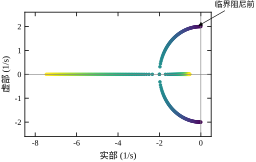
对 c=0.4 这一组，取 Q=I，解 A^{\mathsf T}P+PA=-Q 得
P=\begin{bmatrix}6.3&0.125\\0.125&1.5625\end{bmatrix} \tag{52-18}
两个特征值是 1.559204 与 6.303296，都为正，条件数 4.0426，残差 1.783\times10^{-15}。
这几个数各有用处。P_{11}=6.3 远大于 P_{22}=1.5625，说明位置误差在 V 里的权重是速度误差的四倍——同样大小的偏差，位移更“贵”。这不是人为加的权重，而是由对象本身决定的：刚度 4 意味着位置偏差会储存势能，速度偏差只储存动能，而阻尼又让动能很快耗掉。
非对角元 0.125 为正，说明等值面是向右上倾斜的椭圆。倾斜的量很小，0.125/\sqrt{6.3\times1.5625}\approx0.04，肉眼看接近正椭圆。
条件数 4.0426 的平方根是 2.0106，正好是等值面长轴与短轴之比。所以 \mathrm{cond}(P) 有一个纯几何的解释：它衡量 V 的等值椭圆的扁的程度。扁得越厉害，同一个 V 值对应的状态范围在某个方向上越窄，界就越保守。
图 52-1 把相图与三条等值线画在一起。轨迹从外侧螺旋进入原点，每条等值线都被轨迹由外向内穿过，没有一条被穿出——这就是 \dot V<0 的几何含义。
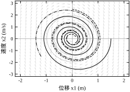
把方程 (52-4) 按列展开成向量形式，可以写成 L\,\mathrm{vec}(P)=-\mathrm{vec}(Q)，其中 L=I\otimes A^{\mathsf T}+A^{\mathsf T}\otimes I。这个 2n^2\times2n^2 的矩阵把“解 Lyapunov 方程”变成“解一个线性方程组”，也把可解性变成一个谱的问题。
对二阶系统，L 的四个特征值恰好是 A 的特征值两两之和：
\lambda(L)=\{\lambda_i+\lambda_j,\;i,j=1,\dots,n\} \tag{52-19}
代入 -0.2\pm1.989975\mathrm{j}，得到 -0.4、-0.4、-0.4+3.97995\mathrm{j}、-0.4-3.97995\mathrm{j}，与脚本输出的 -0.4\pm3.97995\mathrm{j} 加两个 -0.4 完全一致。
式 (52-19) 一下把三件事串起来。第一，只要 A 的极点全在左半平面，任意两个之和的实部就严格为负，L 非奇异，方程有唯一解——这就是线性情形“稳定等价于 P 存在”的代数原因。第二，极点越靠近虚轴，\lambda_i+\lambda_j 的实部越接近零，L 越接近奇异。第三，L 的条件数由最靠近零的那个特征值决定，量级约为 1/(2\min|\mathrm{Re}\,\lambda|)。
本章算例的 \mathrm{cond}(L)=32.0489，与 P 的条件数 4.0426 相差约八倍。图 52-4 把两条条件数曲线画在同一张图上，横轴是阻尼系数。两条曲线在 c\to0 时都急剧上升，在临界阻尼附近取到最小值，过阻尼后又缓慢抬升。它们的形状几乎平行，说明“P 病态”与“算子病态”是同一件事的两种度量。
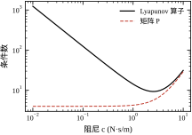
把这一节收成三条，后面几节都会用到。
第一，线性情形没有保守性。 极点全在左半平面，P 就存在；有一个极点在右半平面或虚轴上，P 就不存在（虚轴上时方程奇异）。所以对线性系统，“找不到 Lyapunov 函数”与“不稳定”是同一句话。这条等价性只对线性系统成立，§52.2.5 的三次项反例说明非线性系统没有这个待遇。
第二，条件数比解本身更值得报告。 残差 10^{-15} 只说明方程解对了，不说明结论稳健。\mathrm{cond}(P)=4.04 是一个健康的数；§52.3.6 里扰动降到 10^{-4} 时条件数涨到 10^{4}，同样的求解器、同样的残差，结论的可信度已经差了几个数量级。
第三，收敛快慢由最慢极点决定，而界由 P 与 Q 共同决定。 这个对象的真实最慢模态衰减率是 0.2，Q=I 给出的界是 0.079324，保守了 2.52 倍。保守从哪来、能不能收紧，是 §52.6 的主题。
二阶系统的 Lyapunov 方程可以手算，结果值得记住，因为它是所有数值结果的对照。
设 A=\begin{bmatrix}0&1\\-k&-c\end{bmatrix}、P=\begin{bmatrix}p&q\\q&r\end{bmatrix}、Q=I。把 A^{\mathsf T}P+PA 逐项展开，得到三个方程：
-2kq=-1,\qquad p-cq-kr=0,\qquad 2q-2cr=-1 \tag{52-20}
第一个方程只含 q，直接解出 q=1/(2k)。第三个方程解出 r=(1+1/k)/(2c)。第二个方程解出 p=cq+kr，合并后是
p=\frac{c}{2k}+\frac{k+1}{2c},\qquad q=\frac{1}{2k},\qquad r=\frac{k+1}{2kc} \tag{52-21}
代入 k=4、c=0.4：q=0.125、r=1.5625、p=6.3，与数值解逐位相同。手算五分钟就能核对工具，这是二阶情形值得单独列出来的原因。
这组闭式解还能解释三件事。
第一，q 只与 k 有关，与 c 无关。非对角元反映的是“位置与速度的几何耦合”，由刚度决定；阻尼只改变等值面的胖瘦，不改变倾斜方向。本章 q=0.125 是一个很小的正数，说明倾斜很轻。
第二，p/r=k+c^{2}/(k+1)\approx k。本章这个比值是 4.032，几乎就是刚度 4。所以“位置项权重是速度项的四倍”不是巧合，它就是刚度在数值上的投影。刚度越大，同样的位移偏差越“贵”。
第三，p 与 r 都含 1/c 因子。c\to0 时它们同时发散，这正是 §52.4.2 里 c=0 时方程奇异的解析解释。数值上表现为 P 的元素涨到 10^{15}，解析上就是分母趋零。
更进一步，\lambda_{\max}(P) 约等于 p（因为 p\gg r），于是
\alpha=\frac{1}{2\lambda_{\max}(P)}\approx\frac{c}{k+1} \tag{52-22}
本章 \alpha\approx0.4/5=0.08，与脚本的 0.079324 只差 0.8\%。这个近似式给出一个很有用的判断：收敛率界与阻尼近似成正比，与“刚度加一”近似成反比。它解释了为什么增大阻尼能改善界，也解释了为什么在同样阻尼下提高刚度会让界变松。
第 51 章用能控 Gramian 衡量“把状态推过去有多难”，它满足
AW_c+W_cA^{\mathsf T}+BB^{\mathsf T}=0 \tag{52-23}
把 Q 取成 BB^{\mathsf T}，本章的方程写成 A^{\mathsf T}P+PA=-BB^{\mathsf T}。两个方程长得不同，但解是同一个矩阵：W_c 对称，而对称矩阵的 AW+WA^{\mathsf T} 与 A^{\mathsf T}W+WA 在 (A,B) 与其转置系统之间互换，转置系统的 Gramian 与原系统相同。于是 P=W_c。
同理，取 Q=C^{\mathsf T}C，解出的 P 就是能观 Gramian W_o。
这条联系有两个用处。第一，它说明第 51 章的 Gramian 不是另一个工具，而是 Lyapunov 方程的两个特例；第 51 章讲的“最小能量”“弱能观方向”，都可以翻译成“P 的某个特征方向”。第二，它给出了 Q 的一个有物理含义的选法：Q=BB^{\mathsf T} 对应“按输入通道加权”，Q=C^{\mathsf T}C 对应“按输出通道加权”。前者在最优控制里自然出现，后者在观测器设计里自然出现。
但它也带来 §52.7.2 提到的陷阱：BB^{\mathsf T} 与 C^{\mathsf T}C 都是半正定的，只要输入或输出维数小于状态维数，\lambda_{\min}(Q) 就是零，速率界退化为零。Gramian 本身仍然正定（只要系统能控或能观），所以“P 正定”与“\alpha>0”是两件事，不能混为一谈。
同一个稳定性结论有两条推导路线：极点配置从特征值出发，Lyapunov 从二次型出发。把两条路线并排看，能看清各自的边界。
极点路线的逻辑是：A 的特征值决定 e^{At} 的每一个模态，模态全衰减则系统稳定。它给出的是精确的稳定性判断，而且能算出每个模态的时间常数与振荡频率。缺点是无法处理非线性，也无法处理参数不确定——极点稍微一动，结论就变了。
Lyapunov 路线的逻辑是：找到一个沿轨迹单调下降的函数，下降到底就是平衡点。它给出的是充分判断，而且在二次型情形下会自动带出一个收敛率界。优点是能处理非线性、能处理不确定（只要 P 对所有可能的 A 都成立），缺点是保守。
两条路线在一点上交汇：对线性系统，A 稳定等价于 Lyapunov 方程有正定解。这条等价意味着“极点全在左半平面”与“存在二次型 Lyapunov 函数”是同一件事的两种说法。交汇点之外，两条路线各走各的——极点路线能给出精确的模态分解，Lyapunov 路线能给出去掉线性假设的证明。
实际工作中最好的用法是两条都走一遍。先用极点判断“稳不稳、多快、振不振”，再用 Lyapunov 给出一个可以写进证明的界。两个结论不一致时，通常是 Q 选得不好或 P 求解有误，而不是理论有问题。
以本章 c=4 的情形为例。极点是二重根 -2，A 不可对角化，e^{At} 里出现 te^{-2t} 项。极点路线会提醒你“这里有一个多项式因子，响应不是纯指数”；Lyapunov 路线给出的界仍然是纯指数 e^{-\alpha t}，因为界只要求“存在某个指数上界”，多项式因子被吸收进常数里。两者都没错，但极点路线描述得更细。
同一个系统，换一组状态坐标，P 会变，条件数也会变。这条性质在工程上很重要，因为“选什么单位”本质上就是选坐标。
设 x=Tz，T 可逆。把 V=x^{\mathsf T}Px 改写成 z 的函数，得到 V=z^{\mathsf T}(T^{\mathsf T}PT)z，所以新坐标下的矩阵是 P_z=T^{\mathsf T}PT。
这个式子解释了 §52.8.2 为什么强调量纲归一化。若位移以毫米计、速度以米每秒计，T=\mathrm{diag}(10^{-3},1)，P_z 的第一个对角元会被放大 10^{6} 倍，条件数随之恶化。而稳定性结论本身完全不变——P_z 仍然正定，\dot V 仍然负定。变差的只是数值表示。
反过来说，选一个合适的 T 可以改善条件数。常用的做法是把每个状态除以它的最大预期值，使所有状态都在 [-1,1] 量级。这一步不需要任何理论，只需要知道工况范围。
有一个细节容易忽略：P 的特征向量与 A 的特征向量一般不重合。A 的特征向量描述“模态方向”，P 的特征向量描述“等值面的主轴方向”，两者只有在特殊情况下才一致。本章算例里 P 的非对角元很小，主轴接近坐标轴，而 A 的特征向量是复的，方向随阻尼变化。所以不要用“P 的主轴”去解释“模态”，那是两套几何。
Lyapunov 方程常被当作纯时域工具，其实它与频域有直接的对应，看清这层对应能避免一类误用。
取 Q=C^{\mathsf T}C，P 的积分表示（§52.2.11）可以改写成频域积分：
\mathrm{tr}\left(B^{\mathsf T}PB\right)=\frac{1}{2\pi}\int_{-\infty}^{\infty}\mathrm{tr}\left(G(\mathrm{j}\omega)^{\mathsf H}G(\mathrm{j}\omega)\right)\mathrm{d}\omega ,
其中 G(s)=C(sI-A)^{-1}B。左端是 H_2 范数的平方，右端是频域上的能量积分。这就是 Parseval 关系在状态空间里的样子：P 的元素度量的是“输入到状态的累积能量”，而它在频域里对应曲线下的面积。
这个对应解释了两件事。第一，为什么 Q=C^{\mathsf T}C 会让 \alpha 退化。此时 c_3=\lambda_{\min}(Q)=0（若 C 行满秩但列数少于状态数），式 (52-28) 的分母非零、分子为零，界给不出正的衰减率。物理含义是：H_2 指标只约束“输出能量”，不约束“状态范数”，未被观测的方向可以慢慢漂。这不是公式失效，是指标本身不覆盖那个方向。
第二，为什么弱阻尼系统的界特别松。二阶系统的幅频特性在共振峰附近有一个高而窄的尖峰，频域积分被这个尖峰主导，于是 P 的元素被放大；而时域的真实衰减只由包络决定，与尖峰高度关系不大。两者之间的差距，就是 §52.6.2 说的“椭圆的各向异性”在频域里的表现。
还有一个数值上的用处：算 H_2 范数时，可以解 Lyapunov 方程再取迹，也可以直接做频域积分。两条路线的结果应当一致，这又是一次免费的交叉验证。对本章对象，P 的特征值是 1.559204 与 6.303296，把 B、C 代进去就能得到对应的 H_2 值；若两者不符，多半是 B、C 的定义与 A 的状态顺序没对上。
需要提醒的是，不要把“\alpha 小”读成“频域性能差”。\alpha 是由最坏方向决定的保守下界，频域指标是由能量平均决定的整体量。一个系统可以 H_2 指标很好而 \alpha 很小，也可以反过来。两者回答的是不同的问题，不能互相替代。
数字控制器按固定周期采样，零阶保持下连续对象变成 x_{k+1}=A_dx_k，其中 A_d=e^{AT_s}。极点的映射是 z=e^{\lambda T_s}：左半平面映到单位圆内，虚轴映到单位圆上，右半平面映到单位圆外。稳定性判据从“实部为负”变成“模小于一”，本质是同一个条件换了坐标系。
取 T_s=0.05 s，本章对象的连续极点 -0.2\pm1.989975\mathrm{j} 映射为
z=e^{-0.01}\angle\pm0.0994988=e^{-0.01}\left(\cos0.0995\pm\mathrm{j}\sin0.0995\right) \tag{52-24}
模是 e^{-0.01}=0.99005，相角 \pm5.70^{\circ}。脚本核对的结果就是 |z|=0.99005，与解析值一致到最后一位。
这里有一个容易搞混的换算。连续域的衰减率是 0.2 每秒，离散域每步衰减到 0.99005，每步的对数衰减是 0.00995，除以 T_s=0.05 才回到 0.199。讨论“收敛速度”时必须说清是每秒还是每步，否则两个数会差二十倍，正好是采样周期的倒数。
取 Q=I，解 A_d^{\mathsf T}PA_d-P=-Q：
P_d=\begin{bmatrix}126.499994&2.512508\\2.512508&31.753336\end{bmatrix} \tag{52-25}
残差 3.689\times10^{-15}，条件数 3.9943，与连续域的 4.0426 几乎相同——采样没有改变等值面的形状，只改变了它的尺度。
尺度变了多少？P_{11} 从 6.3 变成 126.5，正好是二十倍，也就是 1/T_s。这不是巧合，可以从方程推出来。把 A_d\approx I+T_sA 代入并只留一阶项：
A_d^{\mathsf T}P_dA_d-P_d\approx T_s\left(A^{\mathsf T}P_d+P_dA\right)=-Q \tag{52-26}
也就是 A^{\mathsf T}P_d+P_dA\approx-Q/T_s。与连续方程相比，右端多除了一个 T_s，所以 P_d\approx P/T_s。物理上说得通：\Delta V 是“每步”的下降量，而 \dot V 是“每秒”的下降量，两者差一个采样周期。离散 Lyapunov 函数不是连续版本的替代品，它是连续版本乘上时间刻度。
这个 1/Ts 因子有一个直接后果：采样周期取得越小，P_d 越大，离散方程的数值条件越差；但它同时让每步的 \Delta V 越小，单步噪声的影响也越小。工程上 T_s 的选择要在“条件数”与“单步扰动”之间折中，不能一味求小。
连续域的界是 \|x(t)\|\le\sqrt{c_2/c_1}\|x_0\|e^{-\alpha t}，离散域对应的是几何序列：
\|x_k\|\le\sqrt{c_2/c_1}\,\|x_0\|\,\alpha_d^{k},\qquad \alpha_d=\sqrt{1-\frac{c_3}{c_2}} \tag{52-27}
其中 c_1=\lambda_{\min}(P_d)、c_2=\lambda_{\max}(P_d)、c_3=\lambda_{\min}(Q)。对本章算例，\alpha_d=0.992099。
脚本同时记录了实测的每步收缩比均值：0.990175。界 0.992099 比实测大，说明界是保守的，这与连续域的结论一致。差别的原因也一样：c_2/c_1 由 P_d 的条件数决定，而 P_d 的等值面是椭圆，最坏方向被椭圆的长短轴比放大了。
图 52-7 左边是 T_s=0.05 时的离散极点与单位圆，右边是 \sqrt{V(x_k)} 的逐步下降曲线与式 (52-27) 给出的直线界。二者的斜率接近但不重合，界始终在上方。这种“贴着但不越过”的形态，是 Lyapunov 界在数值上的典型外观。
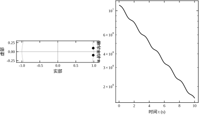
第一，稳定边界。 连续域的临界是实部为零，离散域的临界是模为一。T_s 不改变“哪个系统稳定”，但改变“离边界多远”的度量：连续域的距离是 |\mathrm{Re}\,\lambda|，离散域的距离是 1-|z|\approx|\mathrm{Re}\,\lambda|T_s。同一个对象，采样越快，离散极点越贴近单位圆，数字上看“更危险”，实际上并没有变差。
第二，零阶保持引入的相位滞后。 上面的推导把 A_d=e^{AT_s} 当成精确模型，但真实回路里采样与保持会带来约 T_s/2 的等效延迟。T_s=0.05 s 时这个延迟是 25 ms，对一个时间常数 5 s 的对象可以忽略；对时间常数 50 ms 的快回路就不能忽略。第 51 章讨论采样对能控性的影响时，用的是同一套“快慢对比”逻辑。
第三，数值条件。 由 1/Ts 因子，T_s 从 0.05 降到 0.005，P_d 的元素放大十倍，条件数不变但绝对量级变大。求解器处理 10^{3} 量级的矩阵没问题，处理 10^{8} 量级就开始丢有效位。实践中若发现离散 Lyapunov 方程残差突然变差，先看 T_s 是不是过小，而不是先怀疑模型。
第一，把连续域的 \alpha 直接搬到离散域。连续域的 \alpha 单位是 1/\mathrm{s}，离散域的 \alpha_d 是无量纲的每步因子，两者只能通过 e^{-\alpha T_s} 相互换算。写成 \alpha_d=\alpha 会让结论差二十倍。
第二，用 \Delta V<0 代替 \Delta V\le-c_3\|x\|^{2}。前者只给渐近稳定，后者才给指数收敛与明确的每步收缩比。数字实现里 \Delta V 常常因为舍入在 10^{-16} 量级抖动，若只有严格负号，很容易被一次舍入破坏；有了 -c_3\|x\|^{2} 这个余量，判据才稳。
把 T_s 依次取 0.01、0.05、0.1、0.2、0.5 s，连续极点 -0.2\pm1.989975\mathrm{j} 映射到离散域的结果可以直接用 z=e^{\lambda T_s} 算出。
T_s=0.01 时，|z|=e^{-0.002}=0.998002，相角 0.0199 rad，约 1.14^{\circ}。T_s=0.05 时，|z|=0.990050，相角 5.70^{\circ}。T_s=0.1 时，|z|=0.980199，相角 11.40^{\circ}。T_s=0.2 时，|z|=0.960789，相角 22.80^{\circ}。T_s=0.5 时，|z|=0.904837，相角 57.01^{\circ}。
五个数排在一起，规律很清楚：1-|z| 依次是 0.0020、0.00995、0.0198、0.0392、0.0952，与 T_s 近似成正比；相角也近似与 T_s 成正比。这就是 §52.5.4 说的“距离换了刻度”的定量版本：1-|z|\approx0.2T_s。
工程上选 T_s 有三条经验。第一条，采样角频率至少是振荡角频率的十倍，本例 \omega=2，取 T_s\le0.3 s 就够。第二条，T_s 应当小于最慢时间常数的十分之一，本例时间常数 5 s，T_s\le0.5 s 就够。第三条，数字实现还要考虑计算延迟与通信抖动，通常再留一倍余量。三条合起来，本例取 0.05 s 是保守而合理的。
要注意第一条与第二条给的是“能用”的门槛，不是“好”的标准。T_s 太大，离散化误差与保持延迟都会侵蚀相位裕度；T_s 太小，P_d 的量级膨胀、计算负担上升。0.05 s 正好落在中间，这也是本章选它做算例的原因。
上面的推导默认零阶保持。实际工程里还有双线性（Tustin）、前向欧拉、后向欧拉等离散化方法，它们给出的 A_d 不同，Lyapunov 分析的对象也不同。
零阶保持的优点是极点映射精确，z=e^{\lambda T_s} 严格成立，因此稳定性判断与连续域完全一致。缺点是它假设输入在一个周期内保持不变，对快速变化的输入有建模误差。
Tustin 的优点是频率响应在低频段保真度高，常用于滤波器设计。它的极点映射是 z=(1+\lambda T_s/2)/(1-\lambda T_s/2)，稳定系统仍映到单位圆内，但位置与零阶保持不同，P_d 的数值也会有差别。
前向欧拉的映射是 z=1+\lambda T_s，它把左半平面映到以 1 为圆心、半径为 |\lambda|T_s 的圆内。当 |\lambda|T_s>2 时，这个圆会越过单位圆，原本稳定的连续系统会被离散成不稳定。这不是数值误差，是方法本身的限制。所以在做离散 Lyapunov 分析之前，必须先确认离散化方法与 T_s 的组合没有破坏稳定性。
后向欧拉把左半平面严格映到单位圆内，无条件稳定，但会引入额外的相位滞后，频率特性在高频段失真。
实践中有一条简单原则：控制器实现的离散化方法与稳定性分析用的离散化方法必须一致。用零阶保持实现、用 Tustin 分析，得到的 P_d 与真实运行的系统不对应，残差再小也没有意义。这条原则听起来简单，但跨团队协作时经常出错——控制算法组用一套工具，嵌入式组用另一套。
前面的分析假设状态是实数、执行是即时的。真实系统里，这两条都不成立，而它们对离散 Lyapunov 结论的影响方式完全不同。
量化误差是一种“状态上的不确定”。编码器分辨率有限，读到的 x 与真实的 x 差一个 \pm q/2，于是算出的 V 有误差，用在反馈里则等效于在闭环中注入了一个有界扰动。Lyapunov 分析对此的结论是：只能得到最终有界，不能得到渐近收敛。因为当 \|x\| 小到与 q 同量级时，扰动项已经与收敛项相当，\Delta V 不再恒为负。有界域的尺度大致是 q\|P_dB\|/\lambda_{\min}(Q_d) 量级，这个式子说明两件事：分辨率越高，有界域越小；Q_d 越大，有界域也越小。
这解释了一个常见现象：仿真里曲线收敛到零，实测里总是停在某个小范围内抖动。不是控制器写错了，是仿真没有量化环节。做严格分析时，要么在模型里显式加上量化，要么在报告里注明“结论为最终有界，界由分辨率决定”。
执行延迟是另一种性质的问题。控制器算出的力要等一个采样周期才生效，等效于在回路里串了一个纯延迟。对离散系统，一个周期的延迟相当于把输入矩阵换成 B_d 的滞后版本，闭环矩阵从 A_d-B_dK 变成带额外状态的形式。判断方法很直接：把延迟作为增广状态写进 A_d，重新解 Lyapunov 方程，看 \lvert z\rvert_{\max} 是否仍小于 1。
延迟对 \alpha_d 的影响不是线性的。延迟接近一个采样周期时，相位损失迅速累积，\alpha_d 可能从 0.992099 掉到接近 1，也就是几乎不收缩。这时候增加采样率比调 Q 有用得多，因为延迟的相位损失正比于 \omega T_s，而 T_s 减半，损失也减半。
工程系统里常常不是所有信号都以同一频率采样。电流环跑 10 kHz，速度环跑 1 kHz，位置环跑 100 Hz，这是伺服驱动里的标准分层。用单一 T_s 做 Lyapunov 分析，必须选一个“代表周期”，而这个选择会影响结论。
保守的做法是按最慢的回路分析，把快速的内部回路当成瞬时完成。这样得到的 P_d 对应最慢的采样，结论对三个回路都成立，代价是忽略了快回路带来的额外稳定裕度。
精确的做法是建立切换系统模型：在慢周期内，系统先用快回路的动态演化若干步，再按慢回路更新一次。这类系统的 Lyapunov 分析要用公共 Lyapunov 函数，即要求同一个 P_d 对所有子模式都满足收缩条件。条件比单模式严格，但结论也更强。
还有一条实用经验：多速率系统里，最危险的不是最慢的回路，而是两个回路的周期接近整数倍的情形。此时慢回路的采样点会周期性地落在快回路的特定相位上，形成拍频，表现为某个频率上的持续振荡。仿真时若只跑单速率模型，这种振荡根本不会出现，现场调试时却会出现，排查起来非常费时。
离散情形的结论比连续情形多一个参数，写法上容易含糊。建议固定成三句话。
第一句写稳定性与范围：“闭环极点全部位于单位圆内，最大模为 0.99005，对应采样周期 0.05 s。”这一句给出判据、数值与前提，缺一个就不完整。
第二句写速率，并明确单位：“每步收缩到 0.99005，折合每秒衰减率 0.199。”若只写“每步 0.99”，读者无法与连续指标比较；若只写“每秒 0.2”，读者不知道采样周期。两个都给，才不会歧义。
第三句写界的保守度：“离散 Lyapunov 界给出每步 0.992099，实测 0.990175。”这一句说明界可用，也说明界不是精确值。把两个数都写出来，后续调整采样周期时就有了参照。
三句话的共同要求是“数与前提绑在一起”。离散分析里最容易出的报告错误，是把连续域的 \alpha 直接抄到离散章节，或者把每步收缩比当成每秒速率。这两种错误都不会被计算程序发现，只能靠写报告时逐句核对单位。
与之配套，图里也应当标清时间轴。离散仿真的横轴若是“步数 k”，就要在轴上注明，不能只写 t；若是换算成秒，就要说明换算方式。本章图 52-7 用步数作横轴，因为它的目的是展示逐步收缩，换算成秒反而看不清每一步。
指数稳定的界可以写成一句可以直接用的话：
\|x(t)\|\le\sqrt{\frac{c_2}{c_1}}\,\|x_0\|\,e^{-\alpha t},\qquad \alpha=\frac{c_3}{2c_2} \tag{52-28}
三个数各有分工。c_2/c_1=\mathrm{cond}(P) 决定初值被放大多少，\alpha 决定衰减多快，c_3=\lambda_{\min}(Q) 决定“每单位状态范数至少消耗多少 V”。三者合起来给出一个到达时间的上界：要把范数压到初值的 1\%，需要 t\ge\ln100/\alpha。
对本章算例，\alpha=0.079324，\ln100/\alpha=58.05 s。而真实系统的最慢模态是 0.2，同样压到 1\% 只要 23.03 s。界比实际慢了 2.52 倍。这个倍数不是误差，是保守性的定量表达。
第一，椭圆的各向异性。 V=x^{\mathsf T}Px 的等值面是椭圆，长短轴比 \sqrt{\mathrm{cond}(P)}=2.0106。式 (52-28) 用 \|x\| 而不是 \sqrt{V} 来度量，等于用一个外接圆去套椭圆，最坏方向上就多算了这个比值。2.0106 已经占了 2.52 中的大部分。
第二，用同一个 \alpha 描述所有方向。 真实系统的两个模态衰减率不同：欠阻尼对的实部是 0.2，另一支更快。界只能取最慢的，这没错；错在它还把“最慢模态”与“最坏方向”绑定在一起，而这两件事在几何上并不重合。
第三，Q 的选择。 取 Q=I 时 \alpha 是各向同性的折中；一旦按物理量纲加权，\alpha 反而更小（§52.3.4 的 0.027603 与 0.009747）。这说明保守性并不随“加权更合理”而单调改善，它取决于 V 的等值面与真实不变集形状的匹配程度。
脚本对数值轨迹做了指数拟合，得到衰减率 0.199172，与解析的 0.2 只差 0.4\%。也就是说，0.2 确实是系统的真实速率，0.079324 纯粹是界的问题。图 52-6 把两条曲线画在一起：实测轨迹按 e^{-0.2t} 下降，界按 e^{-0.079324t} 下降，两者在对数坐标上是两条斜率不同的直线。
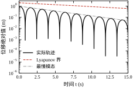
图 52-10 换一个角度看同一件事：横轴扫过阻尼系数，纵轴是“真实速率 ÷ 界”。曲线在临界阻尼附近最低，说明那里界的相对保守性最小；在欠阻尼与过阻尼两端都抬高。这提示一件事：如果你关心界的紧度，临界阻尼附近是最容易得到好界的区域，因为那时 P 的等值面最接近圆形。
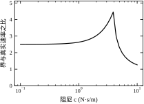
第一条，换 Q。前面已经看到，对本例 Q=I 反而最紧，换任何对角加权都变松。这条路的收益依赖对象，不能指望普适。
第二条，换 V 的形式。若已知系统的某个守恒量或某个单调量（例如机械系统的总能量），直接用它可以显著收紧。单摆的能量函数就是例子，它不需要解任何方程。
第三条，分段拼接。在不同区域用不同的二次型，或者用一个分片二次型逼近真实的不变集。这能把保守性压下去，代价是分析复杂度上升，而且拼接处要验证连续性。
第四条，接受它。界的作用是“保证”，不是“预测”。一个慢了 2.52 倍但仍然成立的保证，在安全认证、鲁棒性分析里往往比一个准确但没有证明的仿真更有价值。工程报告里应当同时给出界与实测，并说明差距的来源。
考虑 x'=-x^{3}。取 V=x^{2}，则 \dot V=-2x^{4}，负定，原点全局渐近稳定。但它不满足指数稳定的条件：\dot V 与 V 的比值是 -2x^{2}，随 x\to0 趋于零，找不到一个与状态无关的 c_3。
解可以解析写出：
x(t)=\frac{x_0}{\sqrt{1+2x_0^{2}t}} \tag{52-29}
从 1 降到 0.1，需要 1+2t=100，即 49.5 s；从 0.1 再降到 0.01，需要 1+0.02t=100，即 4950 s。脚本的数值积分给出 49.506 s 与 4950.557 s，与解析值吻合到小数点后两位。
对照指数收敛：同样从 1 降到 0.1，e^{-t} 只要 \ln10=2.303 s。也就是说，x'=-x^{3} 的第一个十倍比指数系统慢 21.5 倍，第二个十倍慢 2150 倍。每多降一个数量级，时间就乘 100。
图 52-8 把两条曲线画在半对数坐标上。指数收敛是一条直线，代数收敛是一条持续变陡的曲线——在半对数图上“变陡”就是“越来越慢”。这张图是判断“到底属于哪一类收敛”的最快方法：半对数图上不直，就不是指数稳定。
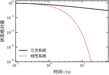
这个区别对控制器设计很实际。指数稳定给了一个与初值无关的时间常数，可以据此定采样周期、定观测器带宽；代数收敛没有时间常数，只能给“多久降到多少”的表格。第 54 章设计状态反馈时默认追求指数稳定，原因就在这里。
第一，先算 \alpha，再看实测。若两者相差在三倍以内，属于正常保守；若相差十倍以上，先检查 P 的条件数是否过大，再检查 Q 是否取成了半正定。
第二，报告里写明是“界”还是“实测”。二者不能混用：界可以写进证明，实测只能写进验证。把 58.05 s 说成“系统的调节时间”是错的，它是“保证不超过的时间”。
第三，对代数收敛的系统，不要硬套指数指标。用“降到某个精度所需时间”描述，比编一个 \alpha 更诚实，也更有用。
式 (52-28) 可以直接换成“多久进入某个精度带”的表格，工程上这比一个抽象的 \alpha 好用。
把范数压到初值的 10\%，界给出的时间是 \ln10/\alpha=29.03 s，实测是 \ln10/0.2=11.51 s。压到 1\%，界给 58.05 s，实测 23.03 s。压到 0.1\%，界给 87.08 s，实测 34.54 s。
三组数的比值都是 2.52，因为界与实测都是纯指数，比值与精度无关。这一点值得记住：保守性是一个常数倍，不随精度要求变化。所以只要算出一个精度下的差距，其他精度可以按比例推。
不过这个比值只在“纯指数”前提下成立。若系统有多个模态，快模态先衰减完，慢模态主导后期，那么早期与后期的等效衰减率不同，比值会变。本章对象只有一对共轭极点，没有这个问题；三阶以上就要小心。
还有一处容易忽略：界的起点不是 \|x_0\|，而是 \sqrt{\mathrm{cond}(P)}\|x_0\|=2.0106\|x_0\|。也就是说，界在 t=0 处就已经比真实轨迹高了一倍。§52.6.2 把这个因子归因于椭圆的各向异性，这里是它的直接后果。
把这两个因子乘起来，2.0106\times2.52\approx5.07，看起来界比实测差五倍。但实际差距只有 2.52 倍，因为两个因子并不独立：放大倍数在早期起作用，衰减率在后期起作用，二者的影响有重叠。这也提醒一件事：不要把界里的各个因子简单相乘来解释总保守性，它们对应的机制不同，作用时段也不同。
如果协议要求“2 s 内进入 \pm1\%”，本对象做不到。按实测速率算需要 23.03 s，按界算需要 58.05 s，两个数都远大于 2 s。要满足协议，只能改控制器把闭环极点往左推，这是第 54 章的任务。Lyapunov 分析在这里的作用不是“证明能达标”，而是“提前算出达不到”，避免在设计后期才发现指标定错了。
第一种用法是定采样周期。经验规则是 T_s\le1/(10\alpha)，本章 \alpha=0.079324，给出 T_s\le1.26 s。这个上限比 §52.5.6 按振荡频率算出的 0.3 s 宽，所以取两者中更严的那个。规则的含义是“一个衰减时间常数内至少采十个点”，否则离散控制看不出连续动态。
第二种用法是定监测阈值。在线算出的 V 若有缓慢上升趋势，可能是参数漂移或执行器饱和。阈值可以设在 V 的初始值的某个倍数，也可以设在水平集上界 c 的一个比例。后者的物理含义更清楚：“距离已知的安全边界还有多远”。
第三种用法是做鲁棒性预算。若 A 有不确定量 \Delta A，可以把 \dot V 写成 -x^{\mathsf T}Qx+x^{\mathsf T}(\Delta A^{\mathsf T}P+P\Delta A)x，只要后一项不超过前一项，稳定性就保住。这个条件给出了“允许多大的 \Delta A”的定量答案，比分段仿真更可靠。
三种用法有一个共同点：都用到了 \alpha 或 P 的具体数值，而不只是“稳定”这个结论。这也是为什么本章反复强调 \mathrm{cond}(P) 与 \alpha 要写进报告——它们是可用的工程参数，不是数学装饰。
本章对象只有一对共轭极点，界的形式简单。真实系统往往有三到五对极点，此时界仍然成立，但两个因子的分工变了。
式 (52-28) 里，\alpha 由 \lambda_{\min}(Q)/(2\lambda_{\max}(P)) 决定，而 P 的积分表示 \int_0^\infty e^{A^{\mathsf T}t}Qe^{At}\mathrm{d}t 说明：快模态的指数因子衰减得快，对积分贡献小，所以 P 的范数主要由慢模态撑起来。于是 \lambda_{\max}(P) 大致由最慢的极点决定，\alpha 也由它决定。这一点与“收敛速度由主导极点决定”的经典结论一致。
不一致的地方在起点。\sqrt{\mathrm{cond}(P)} 由 P 的全谱决定，快模态虽然对 P 的范数贡献小，却会把 \lambda_{\min}(P) 压得更低，因为它在某个方向上“几乎不动”，V 沿那个方向增长极慢。结果是：模态分离越明显，\mathrm{cond}(P) 越大，界在 t=0 处抬高得越多。
这两个效应叠加后的表现是：早期界很松，后期界逐渐贴住真实轨迹。本章对象的两个因子是 2.0106 与 2.52，看起来只差五倍；若系统有一对快十倍的极点，\mathrm{cond}(P) 可能涨到 10^{2} 量级，早期的界就会高出两个数量级，而后期仍然只差两三倍。
工程上的处理办法有两条。第一条是按主导极点做降阶，把快模态当成瞬时跟随，只对慢子系统算 \alpha。这样得到的界更紧，但必须验证降阶误差不会破坏稳定性——通常要求快慢极点相差五倍以上。第二条是分时段使用界：早期用真实仿真给出可达集，后期用 Lyapunov 界给出保证。两条合起来，既不夸大早期性能，也不放弃后期的严格性。
还有一处容易误判：多模态系统的收敛曲线在半对数图上不是一条直线，而是先陡后缓的折线。看到折线不要以为“不满足指数稳定”，它只是多个指数叠加的结果，最终斜率由最慢模态决定。
第一种误用是把界当成预测。界是“不慢于”的保证，不是“将会达到”的估计。用 58.05 s 去安排生产节拍，会把本来 23.03 s 就能完成的动作拖慢一倍多。正确用法是：仿真给预期，界给兜底。
第二种误用是用界比较两个控制器。若两个控制器都稳定，界的松紧更多反映 Q 的选择，而不是控制器本身的优劣。要比较控制器，应当比较真实衰减率或积分指标，界只在“两者都拿不出实测”时作为参考。
第三种误用是忽略界的适用前提。式 (52-28) 要求 V 在全局满足三明治不等式，对非线性系统这通常只在局部成立。把局部界写成“全局保证”，是审稿意见里最常见的错误之一。写结论时，界后面必须跟上它的区域。
本章对象的两个物理参数是 k=4 与 c=0.4。极点的解析式是
s_{1,2}=-\frac{c}{2}\pm\sqrt{\frac{c^{2}}{4}-k} \tag{52-30}
这个式子把两个参数的作用分得很清楚。c 只出现在实部与根号内，控制“衰减快慢”；k 只出现在根号内，控制“振荡频率”。固定 c=0.4 加大 k，实部始终是 -0.2，虚部从 1.99 变大——系统振荡更快，但包络衰减不变，阻尼比反而下降。这就是“加刚度会让系统更振荡”的定量说法。
固定 k=4 加大 c，情况不是单调的。c 从 0 到 4，实部从 0 走到 -2，收敛变快；c 超过 4，一根极点继续左移，另一根却向右挪，最慢的那根决定了整体速度，于是收敛又变慢。c=8 时最慢极点是 -0.536，比 c=0.4 时的 -0.2 快，但比 c=4 时的 -2 慢得多。
表 52-2 已经把这个非单调性列清楚了。工程含义是：阻尼不是越大越好，临界阻尼附近才是响应最快的点。这也解释了为什么很多位置伺服把阻尼比设计在 0.7 到 1.0 之间，而不是一味加大摩擦。
Q 在 Lyapunov 方程里只是一个矩阵，但它同时扮演三个角色，混在一起就容易出错。
第一，它是量纲的载体。 \dot V=-x^{\mathsf T}Qx 的量纲是“V 每秒”，所以 Q 的元素量纲必须是“V 每单位状态的平方每秒”。位置与速度的单位不同，若强行取 Q 全为 1，等于默认“1 m 的误差与 1 m/s 的误差等价”。量纲差得远时，这个默认会把某一方向压得极重或极轻。
第二，它的整体缩放不起作用。 Q\to\lambda Q 使 P\to\lambda P，\alpha=\lambda_{\min}(Q)/(2\lambda_{\max}(P)) 的分子分母同乘 \lambda，结果不变。脚本用 Q=I 与 Q=0.01I 得到同一个 0.079324，就是这条不变性的直接验证。所以调 Q 的“大小”是无效操作，只有调“形状”才有意义。
第三，它的形状决定保守性。 本章算例里，Q=I 给出 0.079324，\mathrm{diag}(10,1) 给出 0.027603，\mathrm{diag}(1,10) 给出 0.009747。两个加权方向都把界变松了，原因是加权让 P 的等值面更扁，\mathrm{cond}(P) 上升，式 (52-28) 里的 \sqrt{c_2/c_1} 把收益吃掉。
还有一类特殊选择：Q=C^{\mathsf T}C。它的物理含义是“只惩罚输出误差”，听起来很合理，但在本章对象上给出 \alpha=0——因为输出只有位置，速度方向在 Q 里权重为零，\lambda_{\min}(Q)=0。方程仍可解（系统能观），但速率界退化为零。加上 10^{-3}I 后才回到 0.000379。这类“半正定 Q”是现场分析里最常见的隐形错误。
初学者常想把 P 的元素“调”成某个值，这是方向反了。P 由 A 与 Q 唯一确定，它没有自由度。它的元素只有诊断价值。
P_{11}/P_{22}=6.3/1.5625\approx4.03，说明位置误差在 V 里的权重是速度的四倍。这个比值接近 k/c 与时间常数的组合，反映“刚度储能、阻尼耗能”的物理事实。若某天算出 P_{11}<P_{22}，先怀疑状态顺序写反了，而不是对象变了。
非对角元 P_{12}=0.125 反映位置与速度的耦合。它为正，说明“位置偏右且速度向右”这种状态比“位置偏右且速度向左”更“贵”——因为前者正在远离平衡点。这个符号可以当作一次快速自检。
\mathrm{cond}(P)=4.0426 是最值得记录的一个数。它同时是等值面长短轴比的平方、初值放大倍数的平方、以及数值敏感度的粗略指标。三个解释指向同一个量，所以它在报告里出现的频率应该最高。
T_s 在离散 Lyapunov 分析里同时是尺度因子、稳定裕度度量、条件数来源。
作为尺度因子，P_d\approx P/T_s，T_s 减半则 P_d 加倍。本章 T_s=0.05 时 P_{11}=126.5，正好是连续域 6.3 的二十倍。
作为稳定裕度度量，1-|z|\approx|\mathrm{Re}\,\lambda|T_s。同一个对象，T_s 越小，离散极点越贴单位圆，但这个“贴近”不代表更危险，只是同一件事换了刻度。
作为条件数来源，T_s 过小会让 P_d 的元素膨胀到 10^{6} 以上，双精度下开始丢有效位。经验阈值是 P_d 的最大元素不超过 10^{6}，超过就考虑用双精度以外的求解手段，或者改用连续域分析再离散化结论。
表 52-3 把本节讨论的参数、作用方向与工程建议收在一起。表中“单调”一列只写确定成立的方向，非单调的地方明确标注。
| 参数 | 主要作用 | 单调性 | 建议 |
|---|---|---|---|
| 阻尼 c | 控制实部，决定最慢模态 | 非单调，临界阻尼最快 | 取 \zeta\approx0.7\sim1.0 |
| 刚度 k | 控制虚部，决定振荡频率 | 单调，k\uparrow 频率 \uparrow | 与执行器带宽匹配 |
| Q 的整体缩放 | 无 | 不影响 \alpha | 不必调，取 Q=I 即可 |
| Q 的方向权重 | 改变等值面形状 | 加权越重，\alpha 越小 | 先算 \alpha 再决定 |
| Q 半正定 | 速率界退化为零 | 退化 | 加 10^{-3}I 正则化 |
| 采样周期 T_s | 缩放 P_d，改变条件数 | T_s\downarrow，P_d\uparrow | 兼顾条件数与延迟 |
| 平衡点偏移 | 破坏 f(0)=0 | 结论失效 | 先平移再分析 |
表 52-3 里最容易被忽视的是最后一行。它不是一个“参数”，而是一个前置条件；条件不满足时，前面所有关于 c、k、Q 的讨论都不成立。
第一，加大阻尼不一定加快收敛。c 从 4 加到 8，最慢极点从 -2 退到 -0.536，收敛慢了近四倍。
第二，加大 Q 不一定收紧界。Q 的整体缩放完全无效，方向加权通常让界变松。
第三，减小采样周期不一定改善数值性质。T_s 减半让 P_d 加倍，条件数不变但绝对量级上升，残差可能变差。
这三个结论有一个共同点：它们都打破了“参数越大越好”的直觉，原因也一样——Lyapunov 结论由最坏方向、最慢模态、最病态的量决定，而这些量对参数的依赖不是单调的。
§52.4.9 说明了坐标变换会改变 P 的条件数，这里给出可执行的做法。
第一步，为每个状态选一个“满量程”值。位移取行程的一半，速度取最大允许速度，电流取额定电流。这些数来自工况，不来自数学。
第二步，构造 T=\mathrm{diag}(x_{1,\max},\dots,x_{n,\max})，令 x=Tz。此时 z 的每个分量都在 [-1,1] 量级。
第三步，在 z 坐标下解 Lyapunov 方程。若 Q 也同步变换成 Q_z=T^{\mathsf T}QT，解出的 P_z 与原坐标下的 P 满足 P_z=T^{\mathsf T}PT，\alpha 完全不变。这一点很重要：归一化只改善数值条件，不改变任何结论。
第四步，把 P_z 换回原坐标，或者在控制器里直接用 z。推荐后者，因为在线计算时 z 的数值范围已知，定点实现更容易定标。
举一个具体的量级例子。若位移以毫米记录、速度以米每秒记录，两者的数值可能差三个数量级。此时 Q=I 等价于“1 mm 的误差与 1 m/s 的误差同权”，而物理上这两件事完全不可比。归一化之后，Q=I 才真正表示“两个方向同等重要”。
最后一条经验：把满量程值写进配置文件，不要在代码里硬编码。工况变了，满量程要跟着变，硬编码会让归一化失效，而失效的表现往往只是条件数变大，不会报错，很难发现。
设计时用的 A 是标称值，运行中的 A 会漂。与其反复重算，不如先弄清“结论对参数的敏感度在哪个量级”。
第一阶灵敏度可以解析求出。设 A 依赖某个标量参数 p，记 \partial A/\partial p=A_p，P 对该参数的偏导为 S=\partial P/\partial p。对 A^{\mathsf T}P+PA=-Q 两边求导，得
A^{\mathsf T}S+SA=-\left(A_p^{\mathsf T}P+PA_p\right).
这是一个与原来同系数的 Lyapunov 方程，右端换成已知量，解出 S 就得到 P 的一阶变化率。\alpha 的变化再由此得到，因为 \alpha 只依赖 P 的特征值。整条链不涉及任何新的算法，只是把同一个求解器调用两次。
实践中更常用的是“扫参数 + 画曲线”。把 p 在标称值附近扫一遍，每个点解一次方程，画出 \alpha(p) 与 \mathrm{cond}(P)(p)。曲线的形状通常比单个灵敏度数值更有信息量：\alpha 随 p 单调下降，说明参数往一个方向漂是安全的、往另一个方向漂要报警；曲线出现尖谷，说明某个 p 附近 \alpha 对参数极敏感，那里必须做区间分析。
三条判断规则可以直接用。第一，若 \alpha 在参数变化 20\% 内保持同号且变化不到一半，结论可以按“稳健”写进报告。第二，若 \alpha 在某处穿过零，那一点就是稳定边界，必须给出对应的参数值——这往往比“稳定”本身更有用，因为它给出了运行包络。第三，若 \mathrm{cond}(P) 随参数急剧上升，即使 \alpha 还没变号，也要警惕——这说明 V 的等值面正在变得极扁，局部结论的适用域在缩小。
还有一条与直觉相反的提醒：最敏感的参数往往不是刚度，而是阻尼。刚度变化主要移动极点频率，对实部影响是二阶的；阻尼变化直接改变实部，一阶就见效。所以做敏感性分析时，先把阻尼取准，再考虑其他参数。
前面逐个讨论参数，实际使用时它们互相牵制，单独调一个往往得不到预期的效果。
第一对耦合是 Q 与量纲。改变状态单位等价于改变 Q 的加权，所以“换单位”和“改 Q”是同一件事的两种说法。这也意味着：报告里必须写清 Q 与状态单位，只写 Q=I 而不写单位，读者无法判断这个 I 到底加权了什么。
第二对耦合是 T_s 与 \alpha_d。T_s 减小，每步的收缩比 \alpha_d 会更接近 1，但折算成每秒的速率反而更接近真实的连续速率。只比较 \alpha_d 的数值会得出“采样越快收敛越慢”的错误结论——这正是 §52.5.10 强调要写清单位的原因。
第三对耦合是 k 与 c。刚度增大，无阻尼自然频率升高，同样的阻尼系数对应的阻尼比下降，系统更容易振荡。所以“加固结构”往往会同时恶化阻尼特性，需要配套调整。
第四对耦合是 c 与 P 的条件数。阻尼偏离临界阻尼越远，P 的等值面越扁，条件数越大。这解释了一个常见现象：为了让响应更快而减小阻尼，界反而变得更保守，因为界里的 \sqrt{\mathrm{cond}(P)} 变大了。
这四对耦合的共同启示是：参数选择必须成组做，不能逐个优化。工程上的做法是先定约束（量程、采样率、结构刚度），再在剩余的自由度里选 Q 与阻尼，最后用 \alpha、条件数、界三个指标一起验收。
Lyapunov 分析里的“调参”不是调控制器增益，而是调分析过程本身：选哪个 Q、用哪个 V、水平集取多大、网格多细。这些选择没有唯一正确答案，但它们应当由“要回答什么问题”决定。
四类常见问题对应四套选法。问“稳不稳”，Q=I 就够，只需要 P 正定。问“多快”，需要 \alpha，此时 Q 的形状开始起作用。问“多大范围”，需要水平集上界 c，此时 V 的形式比 Q 更重要。问“参数变了还稳不稳”，需要扫参数并记录 \mathrm{cond}(P) 的变化。
把问题定错，后面的计算全白费。最典型的是想估计吸引域却只算了一个 \alpha——\alpha 是局部速率，与吸引域边界没有直接关系。
第一条，默认 Q=I。 它给出各向同性的 \dot V，含义最清楚，本章算例里还恰好是最紧的界。没有特殊理由时不要改。
第二条，先做量纲归一化。 若位移以毫米计、速度以米每秒计，Q=I 会让位移方向的权重被放大 10^{6} 倍。做法是先把状态无量纲化，或者按 1/x_{\max}^{2} 构造 Q 的对角元。
第三条，加权之后必须复算 \alpha，不能假设“更合理”就意味着“更紧”。 本章的 \mathrm{diag}(10,1) 与 \mathrm{diag}(1,10) 都把 \alpha 从 0.079324 压到 0.027603 与 0.009747。加权的初衷通常是“强调重要状态”，结果却让界更保守，这个反直觉必须用数字确认。
第四条，半正定 Q 要加正则项。 Q=C^{\mathsf T}C 在输出维数小于状态维数时必然半正定，\lambda_{\min}(Q)=0，速率界直接退化为零。加 10^{-3}I 之后回到 0.000379，仍比 Q=I 小两个数量级，但至少不是零。
第五条，把 Q 写进报告。 同一个系统，不同的 Q 给出不同的 P 与不同的 \alpha。不写 Q，结论无法复现。
二次型 V=x^{\mathsf T}Px 一定径向无界，所以“全局”这个词能不能用，只取决于 \dot V 的符号在多大范围内成立。
线性系统里 \dot V=-x^{\mathsf T}Qx 对一切 x 成立，结论可以直接写成全局指数稳定。
非线性系统里要先找 \dot V<0 的区域，再找这个区域里最大的不变水平集。本章的三次项对象就是反例：V=\tfrac12(x_1^{2}+x_2^{2}) 在半径 0.1、0.5、1.0 的圆上都有 \dot V>0 的点，所以它连局部证书都给不出，尽管轨迹实际收敛。
判断“能不能用全局”有一个便宜的检查：把 \dot V 写成“线性部分 + 高阶项”，若高阶项在无穷远处压不住线性部分，就只能是局部结论。这一步不需要求解方程，手算即可。
以单摆为例。V=\tfrac12x_2^{2}+9.81(1-\cos x_1)，\dot V=-0.3x_2^{2}\le0。水平集 \{V\le c\} 不能包含 x_1=\pm\pi，否则 LaSalle 的论证失效。x_1=\pi 处的能量是 2g/l=19.62，所以 c 必须严格小于它。
脚本按 0.01 的步长从 1 扫到 19.61，取到 c=19.61 时水平集刚好不碰 \pm\pi。这个 0.01 的步长是经验值：太粗会越界，太细没有必要，因为 c 的精度只影响“适用域”这句话的小数位，不影响结论本身。
拿到 c=19.61 之后要做两侧验证。内侧取分界能量的 0.95 倍，初值 (2.691,0)，能量 18.641，轨迹的最大摆角就是 2.691，末态回到 (0,0)。外侧取 1.05 倍，初值 (3.0,1.469)，能量 20.601，最大摆角冲到 8.318，末态停在 6.2832\approx2\pi——摆转起来了。
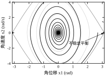
图 52-5 把这两条轨迹画在同一张相图上，中间那条虚线是 V=19.62 的分界。内侧轨迹闭合收敛，外侧轨迹越过顶点后一路向右。这张图同时说明一件事：理论给的 c 是充分条件，不是必要条件。实际吸引域比 c=19.61 对应的水平集大一些，因为 LaSalle 的论证保守。
另一组数字可以校准“多快”。从 2.5 rad 出发，能量 17.6692，进入 \pm0.05 rad 带用 25.126 s。无阻尼对照组的能量漂移只有 4.586\times10^{-7}，说明这个 25.126 s 不是数值耗散造成的假收敛。
三个数值参数需要显式设定：求解器容差、网格步长、正则化强度。
求解器容差按残差判据定。目标残差 10^{-12}，则相对容差取 10^{-13} 量级即可，再小没有意义，因为 P 本身的舍入误差就在 10^{-16}。
网格步长按“结论的小数位”定。若只需要判断“c 大约在 19 到 20 之间”，步长 0.1 足够；若要写“c=19.61”，步长必须不大于 0.01。
正则化强度按 \lambda_{\min}(Q) 与 \lambda_{\max}(Q) 的比值定。加 10^{-3}I 意味着把最小特征值抬到 10^{-3}，若原始 Q 的最大特征值是 10^{3}，条件数仍是 10^{6}，正则化几乎无效。此时应当先做量纲归一化，而不是继续加大正则项。
把上面的经验串起来，对本章对象走一遍。
第一步，写方程，确认平衡点在原点，A 已知。第二步，算极点 -0.2\pm1.989975\mathrm{j}，确认实部为负。第三步，取 Q=I，解出 P，残差 1.783\times10^{-15}，\mathrm{cond}(P)=4.0426。第四步，算 \alpha=0.079324，与实测 0.199172 对比，比值 2.52，判定为正常保守。第五步，因为是线性系统，直接写“全局指数稳定，衰减率不小于 0.079324”，不需要讨论水平集。
全程不需要仿真就能完成前四步，仿真的作用是验证而不是推导。这个顺序很重要：先有结论，再用仿真检验；不要先用仿真找结论，再补一个证明。
第一，先在草稿纸上算一遍二阶情形。二阶的 P 有解析解，手算五分钟，能提前发现符号错误与状态顺序错误。
第二，把残差、条件数、\alpha 三个数一起打印。只看其中一个都会误判：残差小可能是病态，条件数大可能只是量纲问题，\alpha 小可能只是 Q 选得不好。
第三，对非线性对象，先画相图再选 V。相图的形状会告诉你等值面应该长什么样；盲选二次型，十次有八次证不出东西。
本章用了三个对象，它们正好代表三类情形。把三者的分析过程并排看，可以看出方法的选择取决于系统的结构，而不取决于个人偏好。
第一个是质量-弹簧-阻尼对象，线性、二阶、有解析极点。它的分析全程只需一条方程：写出 A，解 Lyapunov 方程，验证 P 正定，写全局指数稳定。计算量最小，结论最强，没有任何适用范围限制。代价是它太特殊——真实系统很少严格线性。
第二个是单摆，非线性、二阶、有守恒量。它不能用 Lyapunov 方程，因为方程只对线性系统成立；必须用物理能量，靠 LaSalle 补上渐近性。结论是局部的，边界 c<19.62 来自另一个平衡点的能量。计算量中等，主要花在寻找水平集上界与验证两侧初值。
第三个是三次项对象，非线性、二阶、没有可用的二次型。它的分析分两步：先证明二次型失败（三个半径上都有 \dot V>0），再构造物理能量 V=\tfrac12x_2^{2}+U(x_1) 并讨论次水平集的连通性。结论也是局部的，但边界的来源不是“另一个平衡点的能量”，而是“势垒的位置”加“连通分支”。
三者的差别可以归成一句话：有物理能量的系统用能量，有线性结构的系统用方程，两者都没有的系统只能靠构造或优化。 这句话不能反过来用——不能说“没有物理能量就一定不能用能量法”，因为有些系统的能量需要先做变换才能看出来。
计算量上也有一个规律。线性对象的分析是“一次求解”，非线性对象的分析是“构造 + 验证 + 定界”三段，后者的工作量大约是前者的三到五倍。所以在项目初期判断“这个系统值不值得做严格分析”时，先看它有没有现成的能量函数：有，成本可控；没有，要么接受仿真验证，要么上 SOS。
三个对象的结论强度也不同。线性对象的结论对所有初值成立，单摆的结论对 V\le19.61 成立，三次项的结论对 V<1.25 且 |x_1|<\sqrt5 成立。越往后，结论越依赖“初值在某个范围内”这个前提。工程使用时要格外注意这个前提，因为它对应的是操作规程，不是数学细节。
还有一点值得对照：三个对象的保守性来源不同。线性对象的保守性来自 P 的椭圆形状，单摆的保守性来自 LaSalle 只给“收敛到不变集”而不给速率，三次项的保守性来自势垒估计得偏小。对应地，收紧的办法也不同——线性对象换 Q，单摆补 Lyapunov 函数，三次项做更精细的区域划分。
§52.8.6 的六步流程是按线性对象写的。换成单摆，前两步照旧，后四步要改写，值得逐条对照。
第一步，写方程。单摆的平衡点在 (0,0)，不需要平移，但要注意角度必须用弧度，且平衡点只在 |x_1|<\pi 内唯一。
第二步，算极点。线性化后得到 -0.15\pm3.13\mathrm{j}，实部为负，说明原点局部稳定。这一步只提供定性信息，因为线性化在 |x_1| 接近 \pi 时完全失效。
第三步，换掉“解方程”。非线性系统没有 Lyapunov 方程可解，直接用物理能量 V=\tfrac12x_2^{2}+9.81(1-\cos x_1)。这一步的关键是判断“系统有没有守恒量”——单摆有，所以能量法是首选。
第四步，验算改为“求导并检查符号”。\dot V=-0.3x_2^{2}，半负定。这里不能因为“不是负定”就判定失败，而要判断能不能用 LaSalle。判据是：\dot V=0 的集合上除了原点还有没有别的轨迹能停住。单摆的答案是“有，但那些点与原点被势垒隔开”，于是要加区域限制。
第五步，定范围。这一步在线性情形里根本不存在，在非线性情形里却是核心。做法是解 f(x)=0 找到相邻平衡点，取它的能量作为上界：9.81(1-\cos\pi)=19.62，于是 c<19.62，脚本取 c=19.61。
第六步，写结论。必须带三样东西：稳定性类型（渐近、指数）、适用域（V\le19.61）、以及“域外会怎样”（越过顶点后持续旋转）。第三样最容易被省略，但它是操作规程的依据。
把这六步与线性版对照，可以看出工作量主要花在第三与第五步。第三、第五步本质上都是“找结构”：找守恒量、找相邻平衡点。这两件事没有通用算法，只能靠对系统的理解。所以非线性分析的门槛不在数学，在建模。
还有一条实用经验：如果第三步怎么都找不到合适的 V，先回到第一步检查建模——很多时候“找不到 Lyapunov 函数”的真正原因是状态变量选得不好，换一组坐标（例如用能量而不是位移）问题就消了。
§52.2.5 的三次项对象可以再看一遍。方程是
\ddot x+0.4\dot x+x-0.2x^{3}=0
取 V=\tfrac12(x_1^{2}+x_2^{2})，\dot V=-0.4x_2^{2}+0.2x_1^{3}x_2。脚本在半径 0.1、0.5、1.0 的圆上算出的 \max\dot V 分别是 +1.98\times10^{-4}、+0.0216、+0.1363，全都为正。
问题不在数值，在形状。V 的等值面是圆，而系统的自然“能量面”不是圆——刚度随位移变化（x-0.2x^{3}），势能在 x_1 较大时变平。用圆去套一个变形的势能面，必然在某些方向上把“正在远离”误判成“正在靠近”。
图 52-9 把 \dot V>0 的区域涂成红色。红色区域从原点附近就开始出现，沿 x_1 与 x_2 同号的方向伸展。这意味着这个二次型在任何包含原点的水平集上都不是 Lyapunov 函数。
这里要说清一个分寸。失败的是一族等权二次型，不是“所有二次型”。若改用线性化后的 Lyapunov 方程解出的 P，由于原点附近三次项是高阶小量，\dot V 在一个足够小的邻域内确实负定——这正是 §52.2.5 所说的“线性化能判局部、不能判全局”。问题在于这个邻域通常小得没有工程意义：椭圆被压得极扁，c 只有 10^{-2} 量级，而实际工况的初值远离原点。所以“二次型失效”的准确含义是“等权二次型给不出有用的适用域”，而不是“二次型在数学上不存在”。
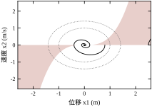
这个对象有一个现成的能量函数。把方程写成 \dot x_1=x_2、\dot x_2=-0.4x_2-x_1+0.2x_1^{3}，势能是恢复力对位移的积分：
U(x_1)=\int_0^{x_1}\left(s-0.2s^{3}\right)\mathrm{d}s=\frac{x_1^{2}}{2}-0.05x_1^{4} \tag{52-31}
取 V=\tfrac12x_2^{2}+U(x_1)，求导：
\dot V=x_2\dot x_2+\left(x_1-0.2x_1^{3}\right)\dot x_1=-0.4x_2^{2}\le0 \tag{52-32}
一次就成功了。\dot V 半负定，E=\{x_2=0\}，在 x_2=0 上只有 x_1=0 与 x_1=\pm\sqrt5 能让状态停住，所以由 LaSalle，轨迹收敛到原点的条件是它始终待在 |x_1|<\sqrt5 的区域内。
这就是“换 V”的价值：同一个系统，二次型给不出任何证书，能量函数直接给出半负定的导数。差别不在计算量，在是否用上了系统的物理结构。
拿到 V 之后不能直接说“V\le c 内收敛”，还要看这个集合长什么样。
U(x_1)=x_1^{2}/2-0.05x_1^{4} 在 x_1=\sqrt5\approx2.236 处取极大值 U=1.25，之后随 |x_1| 增大而下降，最终趋于 -\infty。于是 V 的次水平集 \{V\le c\} 在 c<1.25 时并不是一个连通的、包含原点的椭圆盘：它在势垒外侧还有一片区域，那片区域里的点 V 值同样很小，但已经在“下坡”的外侧。
脚本的实验正好卡在这个陷阱上。从 (0.8,0) 出发，V=0.300，收敛；从 (1.2,0) 出发，V=0.616，收敛；从 (1.6,0) 出发，V=0.952，仍收敛，末态模长约 10^{-6}。但从 (2.5,0) 出发，V=1.172<1.25，看起来“能量更低”，却发散到 4.97\times10^{5}。
原因不是能量判据错了，而是 2.5 已经在势垒外侧。判据必须写成“\{V\le c\} 中包含原点的那一个连通分支”，或者更实用地写成交集 \{V\le c\}\cap\{|x_1|<\sqrt5\}。省掉这个交集，就会得出“2.5 应该收敛”的错误结论。
这条经验可以推广：凡是非单峰势能的系统，能量小不等于离平衡点近。单摆也有同样的结构，只是它的势能在 \pm\pi 处是极大，之后周期性重复，所以 §52.8 才要用 x_1=\pm\pi 去截断。
有了这个截断，能量函数给出的适用域是 c<1.25 且 |x_1|<\sqrt5。三个收敛初值的 V 都小于 1.25，落在域内；发散的那个落在域外。理论、仿真、几何三者对上了。
手工构造 V 靠灵感，工程上需要可重复的流程。常用的有四类。
能量法。 机械、电路、热系统都有现成的能量表达式，直接拿来用，把阻尼项留在 \dot V 里。这是成功率最高的方法，前提是系统有明确的物理结构。
变量梯度法。 先假设 \dot V 的形式（例如 \dot V=-\sum g_i(x)x_i^{2}），再反解 V 的梯度并检查可积性。它把“猜 V”换成“猜 \dot V”，对有明确耗散结构的系统很有效。
Krasovskii 方法。 取 V=f^{\mathsf T}Pf，用 Jacobian 的对称部分判断。它不需要物理直觉，代价是保守。
平方和（SOS）与线性矩阵不等式。 把“V 正定且 \dot V<0”写成多项式非负约束，用半定规划求解。它能把“找 V”变成“解优化”，是当前非线性分析的主流工具。代价是计算量随状态维数与多项式阶数快速增长，四阶以上、五维以上就相当吃力。
Lyapunov 方法不只是“验尸”，它可以直接用来设计控制器。
对线性系统，取 V=x^{\mathsf T}Px，要求 \dot V<0 就得到 A^{\mathsf T}P+PA+Q<0 型的不等式。把 A 换成 A-BK，未知量同时包含 P 与 K，这就是线性矩阵不等式形式的综合问题。LQR 是它的一个特例：给定 Q、R，最优反馈使闭环的 Lyapunov 方程恰好成立，P 就是 Riccati 方程的解。第 55 章会从这个角度重新推导 LQR。
对非线性系统，同样的思路给出“控制 Lyapunov 函数”：先选 V，再找 u 使 \dot V 负定。这条路在滑模控制里尤其自然，因为滑模面本身就可以当 V 的零集，第 59 章会展开。
非二次 V、SOS、LMI 都不是免费的。判断标准可以概括成三条。
第一，二次型给出的结论已经够用，就不要升级。如果只需要“局部指数稳定”这一句话，二次型加线性化就完成了，升级只会增加审稿人质疑的空间。
第二，二次型的失败是“形状不匹配”而非“系统不稳定”，值得升级。三次项对象就是这一类：轨迹明明收敛，二次型却给不出证书。此时换 V 是唯一出路。
第三，需要定量的吸引域，且二次型给的 c 太小。此时升级的收益可以直接用“适用域扩大了多少倍”来衡量，值得投入。
反过来，如果系统的非线性很强、状态维数很高、又没有明显的物理结构，SOS 的求解时间可能超过项目周期。这种情况下更实际的做法是分区线性化，用一组二次型覆盖不同工作区，每个区域单独给证书。
SOS 值得单独说清，因为它在文献里出现频率很高，而边界条件经常被略过。
基本想法是把“多项式 p(x)\ge0 对一切 x 成立”这个难以处理的约束，替换成“p 可以写成一族多项式的平方和”。后者等价于存在一个半正定矩阵 Q 使 p(x)=z(x)^{\mathsf T}Qz(x)，其中 z(x) 是由单项式组成的向量。于是“找 V”变成“找 Q”，而 Q\succeq0 是标准的半定规划约束。
第一个必须记住的事实是：平方和是非负的充分条件，不是必要条件。存在非负但不能写成平方和的多项式，最早的反例来自 Motzkin。所以 SOS 求解失败，只说明“这个次数下找不到证书”，不说明“系统不稳定”。这与 Lyapunov 方法本身的“充分不必要”是同一类局限，只是又叠了一层。
第二个事实是次数的影响。V 的次数每加二，单项式向量 z 的维数就按组合数增长。二阶系统取四次 V 还算轻松，六次就开始吃力；四阶系统取四次 V 已经需要可观的算力。工程上的现实做法是从低次试起，解不出来再加次，而不是一上来就取高次。
第三个事实是数值尺度。SOS 把多项式的系数直接放进半定规划，系数之间差几个数量级时，求解器会报“数值不稳定”或给出看似可行、代回去却不满足的 Q。处理办法与 §52.7.7 同源：先把状态无量纲化，让各项系数落在同一量级。
第四点最容易被忽略：SOS 的结果必须回到原系统验证。求解器给的是浮点近似，Q 的最小特征值可能是 -10^{-9}。因此拿到 V 之后，要重新计算 \dot V 的系数，检查它是否真的可以写成平方和，或者在预计的区域内做密集采样验证。只信求解器的“成功”状态，是把数值误差当成了数学结论。
构造 V 不是纯粹的纸笔工作，仿真可以给出方向，前提是知道该看什么。
第一个线索是相图的形状。把轨迹画出来，看等值线应该往哪个方向拉长。本章三次项对象的相图在 |x_1| 较大时明显变扁，这直接提示 V 的势能项要随 x_1 变平——于是 U 里出现了 x_1^{4} 项。
第二个线索是 \dot V 为正的区域。取一个候选 V，把 \dot V>0 的点涂色（图 52-9 就是这么做），看红色区域的形状。如果红色集中在某个方向，说明 V 在该方向“太陡”或“太缓”，调整那一项的比重往往就能消掉。
第三个线索是不同初值的收敛时间。若两个初值的 V 相近但收敛时间差很多，说明 V 没有反映出真实的“距离”，这个 V 用作区域估计会很保守。
第四个线索是能量漂移。无阻尼时总能量应当守恒，仿真里若出现稳定漂移，说明数值积分有问题，这时候任何基于能量的结论都不可信。本章无阻尼情形的漂移是 4.586\times10^{-7}，这个量级说明积分器选得合适。
这四条线索的共同点是：它们都从“看图”开始，以“改公式”结束。仿真不能替代证明，但它能把盲目的试错压缩到几次之内。反过来，只跑仿真不看结构，得到的只是一堆曲线，写不进报告。
解 A^{\mathsf T}P+PA=-Q 有三条常用路线，适用场景不同。
第一条，Bartels-Stewart 算法。 先用 Schur 分解把 A 化为上三角，再回代求解。复杂度 O(n^{3})，是 SciPy 的默认实现，也是绝大多数场景的正确选择。它的数值稳定性好，因为全程用正交变换。
第二条，Kronecker 展开。 把方程写成 L\,\mathrm{vec}(P)=-\mathrm{vec}(Q) 后直接解线性方程组，L 是 n^{2}\times n^{2}。复杂度 O(n^{6})，只适合 n\le10 的小系统，但它的价值在于独立验证——两条完全不同的算法给出同一个 P，才说明结果可信。本章的交叉验证差值 9.223\times10^{-16} 就是这么来的。
第三条，迭代法。 用 P_{k+1} 逐步逼近，适合超大规模稀疏系统，或者 A 只能以算子形式给出（无法显式存矩阵）的场景。收敛速度由 A 的谱决定，极点越靠近虚轴越慢，这一点与 §52.4.4 的算子谱分析一致。
工程上默认用第一条，用第二条在小维数下抽查，第三条只在特殊结构下考虑。
这是本章最容易踩、后果最严重的一个坑，必须单独写。
SciPy 的连续 Lyapunov 求解器解的是 AX+XA^{\mathsf H}=Q，而我们要解的是 A^{\mathsf T}P+PA=-Q。直接把 A 与 -Q 传进去，得到的是另一个方程的解。
本章初版代码就是这么写的。输出的 P 是 \begin{bmatrix}1.6125&-0.5\\-0.5&6.25\end{bmatrix}，相对残差 2.372\times10^{1}——残差比右端项还大二十倍，说明解根本不满足目标方程。修正的方法是把第一个参数传 A^{\mathsf T}：
\text{求 }A^{\mathsf T}P+PA=-Q\;\Longleftrightarrow\;\text{调用 solver}(A^{\mathsf T},\,-Q) \tag{52-33}
改完之后 P=\begin{bmatrix}6.3&0.125\\0.125&1.5625\end{bmatrix}，残差降到 1.783\times10^{-15}，与 Kronecker 解法的差是 9.223\times10^{-16}。
这个错误之所以危险，是因为求解器不报错、返回的矩阵也对称、特征值也可能为正。只有算残差才能发现。凡是调用 Lyapunov 求解器，第一件事就是算残差，这是本章反复强调残差的原因。
离散版本有同样的陷阱。SciPy 的离散求解器解的是 AXA^{\mathsf H}-X+Q=0，对应我们的 A_d^{\mathsf T}PA_d-P=-Q 时，同样要传 A_d^{\mathsf T}。两个 API 的转置约定一致，记住一次即可。
§52.3.6 的病态序列说明：参数越靠近稳定边界，P 的元素越大，条件数越高，而残差可能仍然是零。工程上要三道防线。
第一道，报告条件数。\mathrm{cond}(P) 与 \mathrm{cond}(L) 都算出来，与残差一起记录。任何一个超过 10^{6}，结论就要加注“对参数敏感”。
第二道，做状态缩放。把量纲差异大的状态归一化到同一量级，能让条件数下降一两个数量级。这是最便宜也最有效的改善手段，比换求解器管用。
第三道，用两条算法交叉验证。Bartels-Stewart 与 Kronecker 在 n\le10 时都很快，两者结果一致才放心。若两者差异明显，说明方程本身病态，不是算法问题。
精度方面，双精度（约 10^{-16} 的相对精度）对绝大多数控制问题是够的。只有两种情况需要更高精度：A 的极点实部小于 10^{-8}，或者 P 的元素超过 10^{10}。这两种情况下，与其提高精度，不如先问“这个系统是不是已经贴在稳定边界上了”。
第一，P_d 的量级比 P 大 1/T_s 倍。T_s=0.001 s 时，P_d 的元素可能是 P 的一千倍。若在线计算 V 用的是单精度浮点，10^{4} 量级的 P 乘上 10^{-3} 量级的状态，中间结果的动态范围可能超出单精度。做法是先把状态归一化，再算二次型。
第二，离散方程对 Q 的正定性要求更严。连续域里 Q 半正定加上能观性还能凑合，离散域里 \Delta V\le-c_3\|x\|^{2} 需要 c_3>0，半正定直接失效。这条与 §52.5.5 的第二点呼应。
第三，离散极点靠近单位圆时，P_d 的增长比连续域更剧烈。连续域的距离是 |\mathrm{Re}\,\lambda|，离散域是 1-|z|，后者在 T_s 小时是前者的 T_s 倍。同样是“距边界 10^{-3}”，离散域的 P_d 可能比连续域大三个数量级。这不是系统变差了，是坐标刻度变了。
Lyapunov 函数不只能写在报告里，还能跑在控制器里做实时健康监测。
计算量很小。对称矩阵的二次型只需 n(n+1)/2 次乘加：
V(x)=x^{\mathsf T}Px=\sum_{i=1}^{n}p_{ii}x_i^{2}+2\sum_{i<j}p_{ij}x_ix_j \tag{52-34}
二阶系统是 3 次乘加，五阶是 15 次，对任何现代 MCU 都是可忽略的开销。
用法是设阈值：正常运行时 V 应当单调下降，若连续若干个采样周期 V 上升超过某个百分比，就报警。阈值不能设得太紧，因为测量噪声会让 V 抖动；经验值是“连续 5 个周期上升且累计超过 10\%”。
还要注意下溢。状态收敛到 10^{-8} 时，V 在 10^{-16} 量级，单精度下已经贴近最小正规数。做法是监测 \sqrt{V} 而不是 V，或者在对数域比较。
嵌入式实现的关键是“离线算 P，在线只算二次型”。
P 在控制器设计阶段算好，烧进固件；运行时只做式 (52-34) 的乘加。这样在线代码只有十几行，不依赖任何线性代数库。
定点实现要注意三点。第一，P 的元素动态范围可能很大（本章 6.3 与 0.125 差 50 倍），统一用同一个 Q 格式会损失小元素的有效位。做法是给 P 单独选格式，或者把 P 归一化后再缩放状态。第二，x_i^{2} 容易溢出，16 位定点下 x_i 超过 181 就溢出，必须先限幅。第三，V 的累加要用更宽的累加器，中间结果高位对齐。
若目标平台有单精度 FPU，直接用浮点更省事，代价只是几微秒。
Lyapunov 分析不是一个孤立工具，它是后面好几章的共同语言。
第 54 章的状态反馈与观测器，用 V=x^{\mathsf T}Px 把“极点配置”翻译成“\dot V 负定”，误差方程 e'=(A-LC)e 的稳定性也由同一个方程判定。第 55 章的 LQR，其 Riccati 方程就是 Lyapunov 方程的推广。第 58 章的 MPC，终端代价常用 P 保证递归可行性。第 59 章的滑模，用 V=s^{2}/2 证明到达条件。第 85 章的数字控制，用离散 Lyapunov 方程 (52-15) 判断采样后的稳定性。
这些章里出现的 P，来源都是本章的方程 (52-4) 与 (52-15)。把这两个方程记牢，后面很多推导都能一眼看懂。
表 52-4 是一份可以直接贴进评审材料的清单。每一条都是“是/否”判断，不通过时有明确动作。
| 检查项 | 判据 | 不通过时 |
|---|---|---|
| 平衡点是否在原点 | f(0)=0 | 先做坐标平移 |
| Q 是否对称正定 | \lambda_{\min}(Q)>0 | 加 10^{-3}I 或改选 |
| 求解器参数是否转置 | 残差 <10^{-10} | 传 A^{\mathsf T} 与 -Q |
| 两条算法是否一致 | 差值 <10^{-12} | 查病态，做状态缩放 |
| P 是否正定 | \lambda_{\min}(P)>0 | 回查 A 的极点 |
| 条件数是否可接受 | \mathrm{cond}(P)<10^{6} | 报告加注敏感性 |
| 结论范围是否写明 | 全局或局部 + 上界 c | 补水平集分析 |
| 在线计算是否溢出 | 中间结果在量程内 | 状态归一化或限幅 |
| 采样周期是否记录 | T_s 与 P_d 同表 | 补离散化说明 |
这张表里最容易被跳过的是第七行。“局部渐近稳定”与“全局渐近稳定”在报告里只差两个字，在工程上差一个适用域。写下结论时若说不出 c 是多少，就还没有做完分析。
真实的机电系统很少是单自由度的。三轴云台、六轴机械臂、多电机同步传动，状态维数从六到几十不等。此时的第一个问题不是“解方程要多久”，而是“该怎么组织这次计算”。
先看计算量。Bartels-Stewart 的复杂度是 O(n^{3})，n=30 时大约是 n=2 时的三千多倍。但即便在笔记本上，n=30 的求解也只要几十毫秒，所以计算量从来不是瓶颈。真正的瓶颈在另外两处：一是 A 的建模误差会随维数放大，二是各轴的量纲差异让 Q=I 失去意义。
建模误差的问题更隐蔽。低维时可以把每个参数都标定到位，维数一高，“某个轴的阻尼系数在温升后变化三成”这类不确定性就变成常态。这时候即使解出一个漂亮的 P，它对应的也是一个不存在的精确模型。工程上更稳妥的做法是把耦合项与参数偏差显式写成 \Delta A，用 §52.6.7 第三种用法的鲁棒性预算去卡它的上界，而不是假装它们不存在。
分块求解是一个常用的折中。把 A 拆成块对角部分 A_0 与耦合部分 \Delta A，先对每个轴单独解 A_i^{\mathsf T}P_i+P_iA_i=-Q_i，再拼成 P=\mathrm{diag}(P_1,\dots,P_m)。这个 P 对 A_0 是严格解，对整体 A_0+\Delta A 只是一个候选函数，需要验证
\dot V=-x^{\mathsf T}Qx+x^{\mathsf T}\left(\Delta A^{\mathsf T}P+P\Delta A\right)x<0 .
把后一项按块展开，会得到形如“耦合系数小于某个由 \lambda_{\min}(Q_i) 与 \|P_i\| 决定的阈值”的条件。这个条件的物理意义很清楚：某一轴的执行能力必须足以压住邻轴传过来的扰动。它比整体求解保守，但每条不等式都能对应到一个可测量的部件，出了问题知道该动哪里。
分块是否够用，有一个经验判据。分别用整体求解与分块求解算出 \alpha，若分块给出的 \alpha 只比整体小两成以内，就用分块——结论稍保守，但结构清楚、可维护；若小了一半以上，说明耦合是主导因素，必须整体求解，否则得到的结论没有实际指导意义。
还有一种情况必须整体求解：系统存在明显的模态耦合，例如柔性机械臂的低阶弯曲模态与关节运动耦合。此时块对角假设直接违背物理事实，分块解出的 P 可能在真实系统上连正定性都保不住。
分析做完了，怎么交给别人？建议固定成一页纸，六个字段，顺序固定。
第一段写模型：状态变量是什么、量纲是什么、平衡点在哪里、A 的数值。这一段的作用是让别人能复现，所以必须给出状态顺序——“x_1 位移、x_2 速度”这样的说明不能省，否则 P 的元素无法解读。
第二段写参数：Q 的取值与理由、采样周期（若是离散系统）、求解器与方法。Q 的理由要写成“两个状态量纲相当，取 I”这种可检验的句子，不要写“按经验”。
第三段写结果，四个数并列：残差 1.783\times10^{-15}、\mathrm{cond}(P)=4.0426、\alpha=0.079324、实测衰减率 0.199172。前两个说明算对了，后两个说明结论有多紧。
第四段写结论：一句话，包含稳定性类型与适用范围。“原点全局指数稳定，衰减率不小于 0.079324”是合格的；“系统稳定”不合格，因为它没说是哪种稳定、对哪些初值成立。
第五段写验证：用了哪条独立路线、跑了哪几组初值、结果与界的比值是多少。这一段是给复核者看的，也是给自己留的证据。
第六段写边界：这套结论在什么条件下失效。参数漂移多少、采样周期多大、饱和多深，会让 \dot V 不再负定。这一段的写法应当是“若 k 超过某值则结论失效”，而不是“实际中应注意参数变化”这种没有信息量的话。
一页纸的限制不是为了省纸，而是为了强迫作者做取舍。凡是写不进一页纸的内容，通常是因为作者自己还没想清楚哪一条是主要结论。真正做透的分析，核心往往只有一条不等式和三个数。
分析报告不是一次性的。样机换了电机、结构调整了质量、控制器改了采样周期，原来的结论都要重新确认。把“改了什么就要重算什么”固定成一张对照表，可以避免漏算。
| 变更内容 | 必须重算 | 可以保留 |
|---|---|---|
| 刚度或质量变化 | A、极点、P、\alpha | 分析流程、Q 的选择理由 |
| 阻尼变化 | 极点、P、\alpha、界 | 状态定义、量纲归一化 |
| 采样周期变化 | A_d、P_d、\alpha_d、离散图 | 连续域的全部结论 |
| 离散化方法变化 | A_d、P_d | Q、适用域的形状 |
| 状态坐标变换 | P、条件数 | \alpha、稳定性类型、c 对应的物理边界 |
| Q 的调整 | P、\alpha、界 | 极点、稳定性类型 |
表里最容易被漏掉的是最后两行。坐标变换不改变任何结论，所以很多人以为不用重算，但报告里写的 P 与代码里用的 P 必须一致，否则在线计算的 V 与报告的数值对不上。Q 的调整则相反，它看起来很“轻”，实际会改变 \alpha 与界的全部数值。
还有一条实践建议：把 P 的数值连同生成它的代码版本一起存档。半年后若有人问“这个 P 是怎么来的”，能立刻回答“哪个提交、哪个参数、哪个求解器”。没有这份记录，报告里的矩阵就只是一串无法追溯的数字。
第一，不需要解方程。 这是 Lyapunov 方法最本质的优势。稳定性是关于 t\to\infty 的命题，仿真永远只能跑到有限时刻；Lyapunov 函数把无穷时间的问题变成一个代数符号问题，一次判断覆盖所有时间。对非线性系统，这一点尤其重要，因为非线性方程绝大多数没有解析解。
第二，能处理非线性。 极点判据只对线性系统有效，描述函数只对特定类型的非线性有效，相平面只对二阶有效。Lyapunov 方法对维数没有硬限制，对非线性形式也只要求连续可微。单摆的能量函数就是一个例子：不需要线性化，对任意摆角都成立。
第三，给出定量结论。 稳定/不稳定是定性判断，Lyapunov 方法还能给出衰减率 \alpha、初值放大倍数 \sqrt{\mathrm{cond}(P)}、适用域上界 c。这三个数直接对应工程指标：调节时间、超调、安全工作范围。
第四，可以嵌入在线系统。 V 的计算只是二次型，几十次乘加，能跑在单片机上。把 V 做成实时监测量，可以在系统偏离设计工况时提前报警，这比事后分析有用得多。
第一，充分不必要。 找到 V 一定能证明稳定，找不到 V 什么也说明不了。三次项对象就是活例子：等权二次型在任何半径上都给出正的 \dot V，系统却确实收敛。这个不对称意味着 Lyapunov 方法的“失败”不等于“系统有问题”，只等于“这个函数不行”。
第二，V 的构造没有通用算法。 线性系统有方程可解，非线性系统只能靠物理直觉、变量梯度、Krasovskii 或 SOS。对高维黑箱模型，这几种方法都可能失效。工程上常见的妥协是分区线性化，用一组二次型覆盖工作区。
第三，无法直接判定不稳定。 要证明不稳定，需要 Chetaev 函数（在一个区域内 V>0 且 \dot V>0），而构造 Chetaev 函数比构造 Lyapunov 函数更难。所以实践中“判不稳定”往往还是靠线性化或仿真。
第四，数值上可能病态。 极点靠近虚轴时 P 的元素急剧增大，条件数升高，结论对参数敏感。§52.3.6 的序列里，扰动 10^{-4} 就让条件数到 10^{4}，再小两个数量级就接近双精度的极限。
第五，扩展情形复杂。 时滞系统需要 Krasovskii 泛函或 Razumikhin 条件，切换系统需要共同 Lyapunov 函数，混杂系统需要多 Lyapunov 函数。每一种扩展都有各自的技术条件，不能把本章的结论直接搬过去。
适合用的场景有三个特征：维数不高（十维以内）、有明确的物理结构（机械、电路、热工）、需要一份能被复核的证书（安全认证、论文、评审）。
不适合的场景也有三个特征：高维黑箱（神经网络控制器、复杂化工流程）、强非光滑（干摩擦、饱和、继电器）、时滞显著（网络控制、大惯性过程）。这三类不是“不能分析”，而是“用本章的工具性价比低”，应当换方法。
还有一个边界容易被忽略：Lyapunov 方法回答的是“是否收敛到平衡点”，不回答“收敛到哪个平衡点”。多平衡点系统里，不同初值可能收敛到不同点，LaSalle 只能告诉你“收敛到不变集”，要说清是哪一个，还得结合相图或区域划分。§52.9.3 的三次项对象就有三个平衡点：0 与 \pm\sqrt5。
表 52-5 把五种常用稳定性分析工具放在一起。选择依据不是“哪个更先进”，而是“要回答什么问题、系统是什么结构”。
| 方法 | 能给什么 | 主要局限 | 适用对象 |
|---|---|---|---|
| 极点判据 | 精确的稳定/不稳定 | 只对线性定常 | 线性化后的工作点 |
| 相平面 | 全局几何图像 | 只对二阶 | 二阶非线性 |
| 描述函数 | 极限环的存在与幅值 | 近似，只对特定非线性 | 含间隙、饱和的回路 |
| Lyapunov 直接法 | 稳定性证明 + 定量界 | 充分不必要，V 难构造 | 低维、有物理结构 |
| SOS / LMI | 自动搜索 V 与吸引域 | 计算量随维数爆炸 | 中低维多多项式系统 |
表中第二行与第四行常常配合使用：相图给出几何直觉，Lyapunov 给出严格证明。只画相图不证明，结论不可靠；只做 Lyapunov 不看相图，V 往往选错形状。
第三行值得补充一句。描述函数假设非线性环节可以用一个与幅值相关的等效增益代替，它能预测极限环，但不能证明稳定性。工程上常把描述函数与 Lyapunov 结合：描述函数找候选极限环，Lyapunov 在环外证明收敛。
三条判断标准。
第一条，系统维数超过十且没有稀疏结构。此时 P 的求解仍然可行，但 V 的构造与验证成本急剧上升，LMI 往往更合适。
第二条，非线性不可微或有切换。Lyapunov 定理要求 f 连续可微，干摩擦、饱和、继电器都不满足。此时要么做光滑化近似，要么改用非光滑分析。
第三条，结论需要“精确”而非“保守”。Lyapunov 给的是保证，天生保守。若工程上需要精确的吸引域边界，只能靠数值延拓或大规模仿真加验证，此时 Lyapunov 的作用退化为“提供初值”。
反过来，如果需求是“给一份能过评审的稳定性证明”，本章的方法仍然是最直接的选择。它的推导短、假设清楚、结论可复核，这三条在工程评审里比“精确”更重要。
把前面几条局限放到一个具体情境里，能看清它们是怎么合起来误导人的。
设想一台带配重的翻转机构，调试时出现“偶尔回中不到位”。工程师按小角度工况线性化，算出极点实部为负，判为稳定，于是先怀疑传感器。换了传感器仍复现，又怀疑摩擦。最后做 Lyapunov 分析才发现问题：机构在大角度时配重提供的回复力矩迅速减小，等效刚度随角度下降，二次型给出的 \dot V<0 只在一个不大的角度范围内成立，而回中指令的初始角已经超出这个范围。系统是局部稳定、全局不稳定的。
这个例子包含三个典型错误。第一，把线性化结论当成全局结论。极点只描述原点邻域，工作范围超出邻域时它什么也没说。第二，没有算适用域。若当初解出 c 并核对初值，问题在第一次分析时就会暴露。第三，把“偶尔”归因于外部因素。Lyapunov 视角下，“偶尔”通常意味着工作点偶尔越过了某个边界——这本身就是需要定量的信息。
复盘之后的做法很简单：把 c 换算成允许的初始角，写进操作规程；同时把 V 做成在线监测量，一旦 V 超过 0.8c 就降速。这两条改动没有增加任何硬件，成本只是几十行代码。
这个案例说明一件事：本章的方法最大的价值不是“证明稳定”，而是把“稳定”这个定性说法变成一组可核对的数。一旦有了数，误判就没有藏身之处。
本章所有数值都来自两个脚本：code/ch052_sim.py 负责算，code/ch052_figs.py 负责画。前者不画图，后者不算法。这样分工之后，正文里任何一个数字都能在不看图的情况下复算，图也不会因为一次计算改动而失真。
在 book 目录下执行两条命令：
"D:\Anaconda3\envs\py311\python.exe" code\ch052_sim.py
"D:\Anaconda3\envs\py311\python.exe" code\ch052_figs.py第一条打印十二组报告，第二条在 figs/ch052/ 下生成 11 张图的 SVG 与 PDF。依赖只有 numpy、scipy、matplotlib，不需要 control——本章的方程都可以直接用 scipy.linalg 的两个 Lyapunov 求解器加 numpy 的矩阵运算完成，省掉了 slycot 在 Windows 上的安装麻烦。
脚本按三层组织，见表 52-6。
| 层 | 内容 | 主要函数 |
|---|---|---|
| 对象层 | 三个被分析系统 | plant_msd、f_pendulum、f_cubic_damped、f_cubic_only |
| 工具层 | 求解与体检 | solve_p、solve_p_vec、lyap_operator、simulate、pendulum_energy |
| 报告层 | 按主题成组输出 | report_spectrum 至 report_q_effect 共十二个 |
工具层只接受数组，不打印任何东西；所有打印集中在报告层。换对象时只改对象层与报告层的两行，工具层不动。
三个对象分别是：52.4 节的单自由度质量-弹簧-阻尼对象（plant_msd，k=4、c=0.4、m=1）；52.1 与 52.8 节的单摆（f_pendulum，g=9.81、l=1、b=0.3）；52.2 与 52.9 节的三次项对象（f_cubic_damped 带阻尼，f_cubic_only 只保留三次项，用于演示代数收敛）。
整章的技术核心只有两段：把方程解对，把残差算对。
def solve_p(A, Q):
"""解 A'P + PA = -Q，返回 P 与相对残差。
注意：scipy 解的是 A X + X A^H = Q，
所以求 A'P + PA = -Q 必须传 A.T 与 -Q。
"""
P = la.solve_continuous_lyapunov(A.T, -Q)
res = np.linalg.norm(A.T @ P + P @ A + Q) / max(np.linalg.norm(Q), 1e-300)
return P, float(res)这段代码只有五行，注释里那句“必须传 A.T”是初版踩坑后补上的。当时传的是 A，得到 P=\begin{bmatrix}1.6125&-0.5\\-0.5&6.25\end{bmatrix}，残差 2.372\times10^{1}，求解器不报错，矩阵也对称，只有残差暴露了问题。
第二段是独立的验证通道：
def lyap_operator(A):
"""连续 Lyapunov 算子 L，满足 vec(A'P+PA)=L vec(P)（列优先）。"""
n = A.shape[0]
return np.kron(np.eye(n), A.T) + np.kron(A.T, np.eye(n))
def solve_p_vec(A, Q):
"""用 Kronecker 展开独立求解，作为交叉验证。"""
L = lyap_operator(A)
p = np.linalg.solve(L, -Q.reshape(-1, order="F"))
return p.reshape(A.shape, order="F")np.kron 的写法容易把两个因子的顺序搞反，验证办法是看结果：两个解法的差应当落在 10^{-15} 量级。本章得到 9.223\times10^{-16}。若差到 10^{-8} 以上，先查 order="F" 有没有漏，再查转置。
离散版本同样只有几行，转置约定与连续版一致：
def solve_p_discrete(Ad, Q):
"""解 Ad'PAd - P = -Q，返回 P 与相对残差。"""
P = la.solve_discrete_lyapunov(Ad.T, Q)
res = np.linalg.norm(Ad.T @ P @ Ad - P + Q) / np.linalg.norm(Q)
return P, float(res)main() 顺序调用十二个报告，每组前面有编号与标题。表 52-7 汇总了每组的关键输出与它支撑的正文结论。
| 报告 | 关键输出 | 对应正文 |
|---|---|---|
【1】report_spectrum |
五个阻尼下的极点，-0.2\pm1.989975\mathrm{j} 至 -0.535898/-7.464102 | 表 52-2、图 52-3 |
【2】report_lyap |
P、残差 1.783\times10^{-15}、\mathrm{cond}(P)=4.0426、\mathrm{cond}(L)=32.0489 | §52.4.3、§52.4.4 |
【3】report_rate |
真实速率 0.200000、界 0.079324、比值 2.52、拟合 0.199172 | §52.6.1、图 52-6 |
【4】report_pendulum |
分界能量 19.6200、进入 0.05 带 25.126 s、无阻尼漂移 4.586\times10^{-7} | §52.1.2、§52.8.4 |
【5】report_region_1d |
网格最大水平 c=0.49（解析 0.5） | §52.8.4 |
【6】report_region_2d |
两侧初值 (2.691,0) 收敛、(3.0,1.469) 转起，最大摆角 8.318 | 图 52-5 |
【7】report_quadratic_fail |
三个圆上 \max\dot V 为 +1.98\times10^{-4}/+0.0216/+0.1363 | §52.2.5、图 52-9 |
【8】report_cubic |
x'=-x^{3} 的 49.506 s 与 4950.557 s | §52.6.4、图 52-8 |
【9】report_discrete |
\lvert z\rvert=0.99005、P_{11}=126.5、\alpha_d=0.992099、实测 0.990175 | §52.5、图 52-7 |
【10】report_conservative |
界与实测的比值随阻尼变化 | 图 52-10 |
【11】report_numeric |
扰动 10^{-4} 时 \mathrm{cond}(P)=\mathrm{cond}(L)=10^{4}，残差仍为零 | §52.3.6、§52.10.3 |
【12】report_q_effect |
Q=I 与 0.01I 同为 0.079324，C^{\mathsf T}C 为 0，加正则后 0.000379 | §52.3.4、§52.7.2 |
读这十二组时有四处容易看漏。
第一处，第二组的 \mathrm{cond}(L) 是 \mathrm{cond}(P) 的约八倍。不要以为其中一个是错的，它们度量的是不同对象：前者是 n^{2}\times n^{2} 的算子，后者是 n\times n 的解矩阵。八倍这个比例大致是 n^{2} 与 n 的关系带来的。
第二处，第三组的比值 2.52 略大于 \sqrt{\mathrm{cond}(P)}=2.0106。多出来的部分来自“最慢模态”与“最坏方向”不重合，这一点在 §52.6.2 已经解释。
第三处，第七组的三个 \max\dot V 随半径增大而增大，但都为正。若只算一个半径，可能误以为“缩小范围就能成功”；三个半径一起看，才知道这个二次型在任何尺度上都不行。
第四处，第十一组的残差全是零。这最容易被当成“结果很好”，实际上它是“方程解对了但结论不可信”的典型。看这一组必须同时看条件数。
ch052_figs.py 只做三件事：调数据、调样式、保存。
from plot_styles import setup, save, LINE_MAIN, LINE_COMP, SINGLE, DOUBLE
import flow_styles as fs
import ch052_sim as cs
setup()
FIG = BOOK / "figs" / "ch052"三行导入对应三类图：数据曲线用 plot_styles，流程与框图用 flow_styles，数值一律从 ch052_sim 取，不在画图脚本里重算。这条规矩保证“图上的数与正文的数”永远一致。
11 张图的分工是：图 52-1 相图加等值线，图 52-2 单摆能量下降，图 52-3 极点轨迹，图 52-4 条件数随阻尼，图 52-5 分界线与两侧初值，图 52-6 界与轨迹，图 52-7 离散极点与逐步收缩（双子图），图 52-8 代数与指数收敛，图 52-9 二次型失效区域，图 52-10 界与真实速率之比，图 52-11 七步流程。
图内文字有一条硬约束：中文与公式不能混在同一个字符串里。轴标签写成“位移 x1 (m)”而不是“位移 x_1 (m)”，因为后者在 SVG 与 PDF 两条渲染链上会出现方框。公式只出现在图注与正文里。
换对象只需改三处。
第一处，plant_msd 换成你的状态矩阵。若是非线性系统，把 f_* 换掉，并保证返回的导数与状态同维。
第二处，report_spectrum 里的阻尼序列换成为你关心的参数扫描范围。这一步决定你看得到哪些极点。
第三处，report_lyap 里的 Q 换成你的选择。默认 Q=I，只有在量纲差异大时才改。
工具层的四个函数不用动。这也是把它们与报告层分开的原因：分析流程是通用的，对象与参数是特定的。
四个检查，按成本从低到高。
第一，残差。低于 10^{-10} 才算通过。这一条能抓住 API 误用、Q 不对称、A 临界三类错误。
第二，交叉验证。solve_p 与 solve_p_vec 的差低于 10^{-12}。这一条能抓住转置、order、维度顺序三类错误。
第三，条件数。超过 10^{6} 就在报告里加注。这一条不改变结论，但改变结论的可信度描述。
第四，量纲检查。P 的元素量级是否符合物理直觉：位置项的权重量级应当接近刚度与阻尼的组合，不该出现 10^{12} 这样的数。
四条都过，才可以把数字写进报告。本章所有数字都过了这四条。
MATLAB 的 lyap(A, Q) 解的是 AX+XA^{\mathsf T}+Q=0，与 SciPy 的符号约定相反。移植时要写成 lyap(A.', Q) 才能得到 A^{\mathsf T}P+PA=-Q 的解。这个差异与 §52.10.2 是同一类问题，只是方向反过来。移植后第一件事仍然是算残差。
嵌入式移植不需要求解器。P 在设计阶段算好，导出为常量数组，在线只做式 (52-34) 的乘加。若状态是定点数，先把 P 归一化到 [-1,1) 区间，再把缩放因子并入状态，避免中间结果溢出。
本章的判据可以直接写成断言，放进持续集成。
第一批断言针对求解器：残差 <10^{-10}，两法差 <10^{-12}，P 的最小特征值 >0。三条都过，说明方程解对了。
第二批针对数值：\mathrm{cond}(P) 与 \mathrm{cond}(L) 落在预期区间，\alpha 与实测速率的比值落在 2 到 3 之间。第二条不是“必须精确等于 2.52”，而是“不许偏离量级”，因为实现细节会带来小幅差异。
第三批针对定性结论：c=0 时求解器必须报出病态（条件数 >10^{12} 或残差 >1）；三次项对象上二次型必须在三个半径上都失败；能量函数必须在 |x_1|<\sqrt5 内给出负定导数。这三条把“理论的边界”固定下来，防止后续改动悄悄越过。
回归测试的价值不在通过，而在失败时能指出是哪一层出了问题。第一批失败是数值问题，第二批失败是参数问题，第三批失败是理论假设被破坏。三层分开，定位就快。
十二组报告都是“打印给人看”的，但它们最好同时“返回给机器”。这个细节决定了代码能不能做自动对账。
推荐的做法是每个 report_* 函数返回一个字典，键名用英文、单位写进键名或说明，打印只是字典的一种呈现方式。例如求解报告返回 {"P": P, "residual": res, "cond_P": cond_p}，正文里的每个数都能在字典里找到对应项。这样改代码后跑一遍，把新旧字典做差分，就知道哪些文字需要改。
单位必须统一在字典生成处，不要在打印时换算。本章全部用国际单位制：位移米、速度米每秒、时间秒、角度弧度。若某个报告内部用了度，必须在键名里写明 _deg，否则半年后没人记得。
数值格式也要固定。残差与条件数用三位有效数字的科学计数法，衰减率用六位小数，时间用三位小数。格式固定的好处是对账时可以直接做字符串比较，不需要容差。本章正文里“1.783\times10^{-15}”与“0.079324”这两种精度不是随意选的，前者是残差的合理有效位，后者是 \alpha 的合理有效位。
字典还有一个用处：把结论写成断言。例如 assert abs(d["alpha"] - 0.079324) < 1e-6，这就把 §52.12.8 的回归测试落到了代码里。断言写在报告函数末尾，跑一次就检查一次，比事后单独写测试脚本更不容易被遗忘。
最后一点：不要在报告函数里做随机数或时变操作。同一个输入必须给出同一个输出，否则对账失效。本章所有报告都是确定性的，仿真用固定步长、固定初值，没有用到随机种子。
跑这套代码时最常遇到的问题，几乎都能从现象反推到原因。下面这张表按“看到什么”组织，比按“哪里错了”组织更好用。
| 现象 | 最可能的原因 | 检查动作 |
|---|---|---|
| 残差在 10^{-1} 量级 | 转置传错，或 Q 的符号写反 | 打印 A^{\mathsf T}P+PA+Q 的整体范数 |
| 残差很小但 P 不正定 | A 本身不稳定，或 Q 非正定 | 打印 A 的特征值与 Q 的最小特征值 |
| 两种算法差 10^{-3} | 方程病态 | 打印 \mathrm{cond}(L)，做状态缩放 |
| 解出的 P 元素达 10^{12} | 状态量纲相差悬殊 | 归一化后重解 |
| 仿真曲线不收敛 | 初值在吸引域外，或时间轴太短 | 查初值的 V 与上界 c |
| 理论界随 t 增大 | \dot V 的符号写错 | 用 \dot V=-x^{\mathsf T}Qx 逐点核对 |
| 单摆的 \dot V 不恒负 | 正常现象，需要 LaSalle | 检查不变集是否只有原点 |
| 三次项上二次型失败 | 正常现象，是本例的设计意图 | 换物理能量，见 §52.9.2 |
| 离散极点跑到单位圆外 | T_s 过大，或用了前向欧拉 | 改用零阶保持并减小 T_s |
| 图里中文变成方框 | 字体未回退 | 确认 apply_cjk_font 被调用 |
| SVG 里公式错位 | 中文与公式混在同一字符串 | 拆成两段，公式单独写 |
| 验收脚本报缺图 | 文件名与正文链接不一致 | 以磁盘文件名为准改链接 |
前四条属于“算错了”，第五到第九条属于“分析没做完整”，最后三条属于“呈现问题”。三类问题的排查顺序应当反过来：先解决呈现，再确认分析完整，最后才怀疑数值。因为呈现问题最容易发现也最容易修，而数值问题的排查成本最高。
还有一个不会报错但很危险的情况：所有断言都通过，但结论的方向反了。例如把“渐近稳定”写成“稳定”，或者把局部结论写成全局。这类错误代码查不出来，只能靠 §52.3.8 的五个问题自查。写完一段结论后，逐条回答那五个问题，比自己重读三遍更有效。
本章的曲线全部来自模型。模型给出的稳定性是“在假设成立的前提下”的稳定性，要把它变成对真实设备的陈述，还需要一步：用实测数据检验假设。
实测能做的第一件事是标定参数。质量、刚度、阻尼这三个数里，质量可以直接称，刚度可以做静载试验，阻尼只能靠动态响应反推。反推的方法很直接：记录一段自由衰减，取包络的对数斜率，得到实际衰减率，再与模型的 0.2 对比。若实测明显更小，说明存在未建模的阻尼或摩擦；明显更大，说明模型里的阻尼偏大。
第二件事是证伪。这是实测最可靠的作用。仿真只能说明“模型稳定”，实测却可以说明“模型错了”——只要实测出现持续振荡或发散，模型的假设就一定有问题。注意方向：实测不能证明稳定，因为任何有限时长的记录都覆盖不了 t\to\infty；它只能否证。
第三件事是标定在线监测的阈值。§52.10.5 提到的“连续五个周期上升超过 10\%”这类经验值，必须用实测噪声水平去定。做法是让设备在正常工况下跑足够长时间，记录 V 的抖动幅度，把阈值设在抖动幅度的三倍以上，否则会频繁误报。
采集数据有三条硬要求，缺一条结论就不可靠。采样率至少是系统带宽的十倍，本章对象带宽约 2 rad/s，即 0.32 Hz，所以 10 Hz 以上才够；记录时长至少三个时间常数，本章是 15 s 量级；初值必须记录，因为所有理论界都以 \|x_0\| 为基准，没有初值就无法比较。
处理数据时有两处容易出错。第一处是滤波。为了去掉噪声做低通滤波，会把真实的高频衰减也滤掉，导致实测衰减率偏小。正确做法是滤波器的截止频率远高于关心的模态，或者干脆不滤波、只用拟合。第二处是微分。速度若是从位移差分得到，噪声会被放大，V 的曲线会剧烈抖动。能用编码器直接测速度就不要差分，必须差分时先做平滑。
最后一句话要说清楚：实测与仿真的偏差本身就是信息。偏差稳定在一个常数倍，多半是参数标定问题；偏差随工况变化，多半是未建模的非线性；偏差随时间漂移，多半是温升或磨损。三种偏差对应三种处理，不调查就直接改控制器，通常会把问题掩盖得更深。
至此，第 52 章的正文结束。下一章处理本章留下的三个缺口：V 能不能自动搜（SOS）、没有守恒量的系统怎么证（收缩分析）、以及能不能用“能量只进不出”这个物理直觉替代构造（无源性）。三者的共同点是都试图把“猜函数”变成“用结构”。